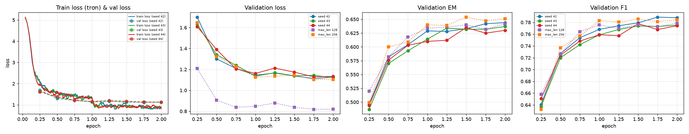
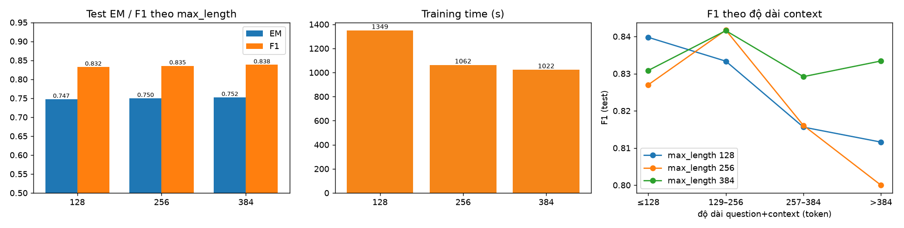
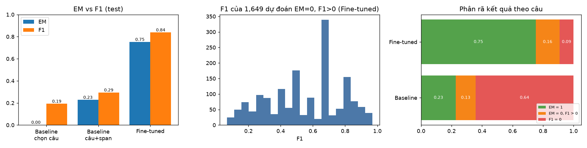
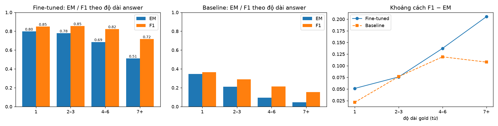
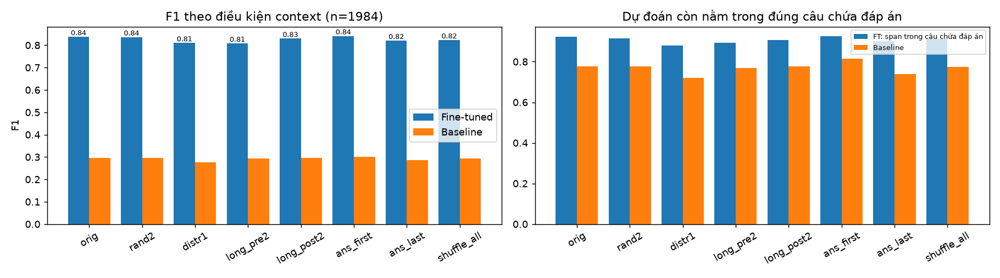
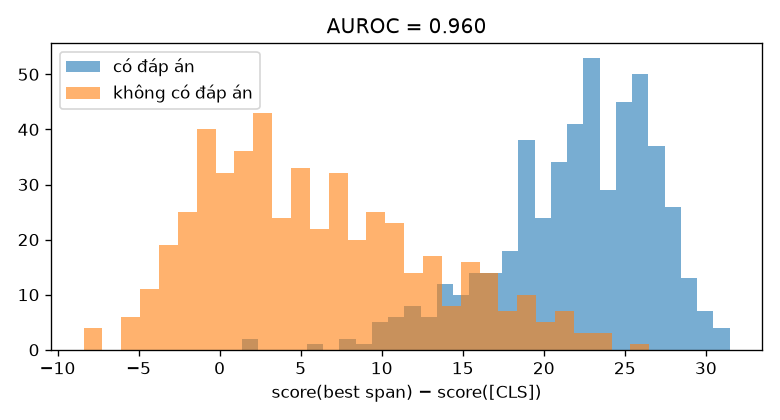

LAB 10 — Extractive QA trên SQuAD v1.1: fine-tune pretrained Transformer, EM/F1, thí nghiệm có kiểm soát, phân tích lỗi¶
Báo cáo chính của LAB 10. Không dùng pipeline("question-answering")/AutoModelForQuestionAnswering: tokenize + offset mapping + căn chỉnh span (qa_model.py), QAModel = AutoModel + head Linear(d,2) tự viết, loss (L_start+L_end)/2, giải mã n-best có ràng buộc, EM/F1 tự cài. Notebook này chỉ nạp kết quả đã cache trong runs/ (train bằng python qa_model.py --run_grid) rồi phân tích; mọi số trong văn bản đều sinh từ code.
AI-assisted (mục 29). Code, notebook và phần viết do AI (Claude Code) soạn. Đề cấm giao AI làm alignment, start/end calculation, prediction, metric calculation, error analysis, reflection — sinh viên cần đọc lại, kiểm chứng và viết lại các phần đó bằng lời của mình.
prediction.mdđược viết trước khi chạy thí nghiệm và không sửa sau khi có kết quả.
import pandas as pd # pandas truoc torch (Windows)
import numpy as np, json, os, random, re, collections, math, time, warnings
import torch
import matplotlib; matplotlib.use("Agg")
import matplotlib.pyplot as plt
from pathlib import Path
from IPython.display import display, Markdown
warnings.filterwarnings("ignore")
os.environ.setdefault("HF_HUB_DISABLE_SYMLINKS_WARNING", "1"); os.environ.setdefault("HF_HUB_DISABLE_PROGRESS_BARS", "1")
import transformers; transformers.logging.set_verbosity_error()
import qa_model as qm, baseline_qa as bq, document_qa as dq
pd.set_option("display.width", 220); pd.set_option("display.max_colwidth", 90); pd.set_option("display.max_columns", 30)
md = lambda s: display(Markdown(s))
SMALL = os.environ.get("LAB10_SMALL") == "1" # chi de chay thu nhanh (khong dung cho bao cao)
data = qm.make_splits(); train, val, test = data["train"], data["validation"], data["test"]
grid = qm.build_grid(); MAIN = qm.MAIN_RUN
RES = {n: json.loads((qm.RUNS_DIR / n / "result.json").read_text(encoding="utf8")) for n in grid}
LEN_RUN = {L: qm.run_name(qm.default_config(max_len=L, seed=42)) for L in (128, 256, 384)}
SEED_RUN = {s: qm.run_name(qm.default_config(max_len=384, seed=s)) for s in (42, 43, 44)}
BLR = json.loads((qm.RUNS_DIR / "baseline" / "result.json").read_text(encoding="utf8"))
golds = [r["answers"]["text"] for r in test]
def load_preds(name):
p = json.loads((qm.RUNS_DIR / name / "preds_test.json").read_text(encoding="utf8")); assert p["ids"] == [r["id"] for r in test]; return p["preds"]
PRED = {n: load_preds(n) for n in grid}
BLP = json.loads((qm.RUNS_DIR / "baseline" / "preds_test_span.json").read_text(encoding="utf8"))["preds"]
BLS = json.loads((qm.RUNS_DIR / "baseline" / "preds_test_sentence_only.json").read_text(encoding="utf8"))["preds"]
bl_fit = bq.KeywordBaseline().fit([r["context"] for r in train])
ft_text = [p["text"] for p in PRED[MAIN]]; bl_text = [p["text"] for p in BLP]
em_ft, f1_ft = qm.per_example_scores(ft_text, golds); em_bl, f1_bl = qm.per_example_scores(bl_text, golds)
print("runs:", list(RES)); print("main:", MAIN, "| test EM/F1 =", round(em_ft.mean(), 4), round(f1_ft.mean(), 4), "| baseline:", round(em_bl.mean(), 4), round(f1_bl.mean(), 4))
runs: ['ft_bert-base-cased_len384_lr3e-05_ep2_s42', 'ft_bert-base-cased_len256_lr3e-05_ep2_s42', 'ft_bert-base-cased_len128_lr3e-05_ep2_s42', 'ft_bert-base-cased_len384_lr3e-05_ep2_s43', 'ft_bert-base-cased_len384_lr3e-05_ep2_s44'] main: ft_bert-base-cased_len384_lr3e-05_ep2_s42 | test EM/F1 = 0.7522 0.8381 | baseline: 0.2281 0.2943
0. Reproducibility (mục 30)¶
R0 = RES[MAIN]; cfg = R0["config"]; hw = R0["hardware"]
rows = [("Model", f"{cfg['model_name']} (AutoModel, add_pooling_layer=False) + QA head Linear(768, 2) tự viết; {R0['params_total']:,} tham số"),
("Tokenizer", f"{cfg['model_name']} fast WordPiece (cased); tokenizer(question, context, truncation='only_second', stride, return_overflowing_tokens, return_offsets_mapping)"),
("Dataset", "SQuAD v1.1 (`rajpurkar/squad`; train 87,599 / dev 10,570 câu hỏi)"),
("Train split", f"{len(train):,} câu hỏi lấy ngẫu nhiên (seed {qm.SEED}) từ phần train **không thuộc** 10% bài Wikipedia dành cho validation (giới hạn GPU 6 GB / thời gian)"),
("Validation split", f"{len(val):,} câu hỏi từ các bài (title) **không có** trong train subset (chọn checkpoint theo val F1)"),
("Test split", f"SQuAD dev chính thức, {len(test):,} câu hỏi, ≥ 3 gold answer/câu (dùng làm test; đánh giá 1 lần cho checkpoint chọn bằng validation)"),
("Max sequence length", f"{cfg['max_len']} (Exp 1: 128 / 256 / 384)"),
("Stride", f"{cfg['stride']} (= max_len // 3: 42 / 85 / 128; 128 là giá trị của đề cho max_len 384)"),
("Batch size", f"{cfg['batch_size']}"), ("Learning rate", f"{cfg['lr']} (linear warmup {cfg['warmup_ratio']:.0%} → decay tuyến tính về 0)"),
("Epochs", f"{cfg['epochs']} (đánh giá validation {cfg['eval_per_epoch']} lần/epoch)"),
("Optimizer", f"AdamW (weight_decay {cfg['weight_decay']}, không decay bias/LayerNorm), grad-clip {cfg['grad_clip']}, fp16 autocast + GradScaler, dropout {cfg['dropout']}"),
("Random seed", "42 (run chính); 43, 44 để đo nhiễu seed"),
("Hardware", f"{hw.get('gpu')} ({hw.get('gpu_mem_gb')} GB), Python {hw['python']}, torch {hw['torch']}, transformers {hw['transformers']}"),
("Training time", f"{R0['train_time_only_s']:.0f} s train thuần (+ {R0['train_time_s']-R0['train_time_only_s']:.0f} s đánh giá validation giữa chừng); VRAM đỉnh {R0['peak_mem_mb']:.0f} MB")]
md("| Mục | Giá trị |\n|---|---|\n" + "\n".join(f"| {k} | {v} |" for k, v in rows))
tab = pd.DataFrame([{"run": n, "max_len": r["config"]["max_len"], "stride": r["config"]["stride"], "seed": r["config"]["seed"], "train features": r["train_feature_stats"]["n_features"],
"train time (s, thuần)": round(r["train_time_only_s"]), "VRAM (MB)": round(r["peak_mem_mb"]), "best epoch": round(r["best_epoch"], 2),
"val EM": r["val"]["em"], "val F1": r["val"]["f1"], "test EM": r["test"]["em"], "test F1": r["test"]["f1"]} for n, r in RES.items()]).set_index("run")
display(tab.round(4))
| Mục | Giá trị |
|---|---|
| Model | bert-base-cased (AutoModel, add_pooling_layer=False) + QA head Linear(768, 2) tự viết; 107,721,218 tham số |
| Tokenizer | bert-base-cased fast WordPiece (cased); tokenizer(question, context, truncation='only_second', stride, return_overflowing_tokens, return_offsets_mapping) |
| Dataset | SQuAD v1.1 (rajpurkar/squad; train 87,599 / dev 10,570 câu hỏi) |
| Train split | 20,000 câu hỏi lấy ngẫu nhiên (seed 42) từ phần train không thuộc 10% bài Wikipedia dành cho validation (giới hạn GPU 6 GB / thời gian) |
| Validation split | 1,000 câu hỏi từ các bài (title) không có trong train subset (chọn checkpoint theo val F1) |
| Test split | SQuAD dev chính thức, 10,570 câu hỏi, ≥ 3 gold answer/câu (dùng làm test; đánh giá 1 lần cho checkpoint chọn bằng validation) |
| Max sequence length | 384 (Exp 1: 128 / 256 / 384) |
| Stride | 128 (= max_len // 3: 42 / 85 / 128; 128 là giá trị của đề cho max_len 384) |
| Batch size | 16 |
| Learning rate | 3e-05 (linear warmup 10% → decay tuyến tính về 0) |
| Epochs | 2 (đánh giá validation 4 lần/epoch) |
| Optimizer | AdamW (weight_decay 0.01, không decay bias/LayerNorm), grad-clip 1.0, fp16 autocast + GradScaler, dropout 0.1 |
| Random seed | 42 (run chính); 43, 44 để đo nhiễu seed |
| Hardware | NVIDIA GeForce RTX 3050 6GB Laptop GPU (6.44 GB), Python 3.14.5, torch 2.12.0+cu126, transformers 5.12.1 |
| Training time | 1022 s train thuần (+ 34 s đánh giá validation giữa chừng); VRAM đỉnh 3124 MB |
| max_len | stride | seed | train features | train time (s, thuần) | VRAM (MB) | best epoch | val EM | val F1 | test EM | test F1 | |
|---|---|---|---|---|---|---|---|---|---|---|---|
| run | |||||||||||
| ft_bert-base-cased_len384_lr3e-05_ep2_s42 | 384 | 128 | 42 | 20234 | 1022 | 3124 | 1.75 | 0.642 | 0.7889 | 0.7522 | 0.8381 |
| ft_bert-base-cased_len256_lr3e-05_ep2_s42 | 256 | 85 | 42 | 22420 | 1062 | 2732 | 1.50 | 0.654 | 0.7855 | 0.7497 | 0.8354 |
| ft_bert-base-cased_len128_lr3e-05_ep2_s42 | 128 | 42 | 42 | 43952 | 1349 | 2310 | 2.00 | 0.642 | 0.7786 | 0.7473 | 0.8323 |
| ft_bert-base-cased_len384_lr3e-05_ep2_s43 | 384 | 128 | 43 | 20234 | 1073 | 3133 | 2.00 | 0.637 | 0.7753 | 0.7486 | 0.8368 |
| ft_bert-base-cased_len384_lr3e-05_ep2_s44 | 384 | 128 | 44 | 20234 | 1069 | 3133 | 1.50 | 0.635 | 0.7778 | 0.7447 | 0.8329 |
1. Dữ liệu — SQuAD v1.1 (mục 3)¶
Mỗi mẫu: context, question, answers.text, answers.answer_start (vị trí ký tự). Dev có ≥ 3 gold answer/câu (EM/F1 lấy max trên các gold); train/validation chỉ dùng gold đầu tiên làm nhãn.
def split_stats(name, recs):
return {"split": name, "#questions": len(recs), "#articles": len({r["title"] for r in recs}), "#unique contexts": len({r["context"] for r in recs}),
"mean context words": np.mean([len(r["context"].split()) for r in recs]), "mean question words": np.mean([len(r["question"].split()) for r in recs]),
"mean answer words (gold 1)": np.mean([len(r["answers"]["text"][0].split()) for r in recs]), "mean #gold answers": np.mean([len(r["answers"]["text"]) for r in recs])}
display(pd.DataFrame([split_stats("train (subset)", train), split_stats("validation", val), split_stats("test = SQuAD dev", test)]).set_index("split").round(2))
assert not ({r["title"] for r in train} & {r["title"] for r in val}), "validation ro ri bai (title) voi train"
r = test[0]
md(f"**Ví dụ (dev)**\n\n- Question: {r['question']}\n- Context: {r['context'][:400]}…\n- Gold answers: {r['answers']['text']} @ {r['answers']['answer_start']} (ký tự)\n- Kiểm tra: `context[answer_start:answer_start+len(text)] == text` → {all(r['context'][s:s+len(t)] == t for t, s in zip(r['answers']['text'], r['answers']['answer_start']))}")
| #questions | #articles | #unique contexts | mean context words | mean question words | mean answer words (gold 1) | mean #gold answers | |
|---|---|---|---|---|---|---|---|
| split | |||||||
| train (subset) | 20000 | 398 | 12223 | 119.00 | 10.05 | 3.18 | 1.00 |
| validation | 1000 | 44 | 803 | 119.13 | 10.19 | 3.05 | 1.00 |
| test = SQuAD dev | 10570 | 48 | 2067 | 123.95 | 10.22 | 3.02 | 3.29 |
Ví dụ (dev)
- Question: Which NFL team represented the AFC at Super Bowl 50?
- Context: Super Bowl 50 was an American football game to determine the champion of the National Football League (NFL) for the 2015 season. The American Football Conference (AFC) champion Denver Broncos defeated the National Football Conference (NFC) champion Carolina Panthers 24–10 to earn their third Super Bowl title. The game was played on February 7, 2016, at Levi's Stadium in the San Francisco Bay Area …
- Gold answers: ['Denver Broncos', 'Denver Broncos', 'Denver Broncos'] @ [177, 177, 177] (ký tự)
- Kiểm tra:
context[answer_start:answer_start+len(text)] == text→ True
2. Prediction (mục 9) — chép nguyên văn từ prediction.md (viết trước khi chạy)¶
display(Markdown(Path("prediction.md").read_text(encoding="utf8")))
Prediction (mục 9) — viết TRƯỚC khi chạy bất kỳ thí nghiệm nào¶
Bản nháp do AI (Claude Code) soạn trước khi chạy model/baseline, dựa trên kiến thức từ LAB 08/09 và hiểu biết chung về SQuAD; sinh viên cần đọc lại và diễn đạt bằng lời của mình (đề mục 29 không cho giao prediction cho AI — xem AI-assisted trong
README.md). Nội dung không sửa sau khi có kết quả; đối chiếu vớiREADME.mdmục 6 vàqa_finetuning.ipynb.Thiết lập dự kiến khi viết: SQuAD v1.1,
bert-base-cased+ head start/end tự viết, train trên một tập con vài chục nghìn câu hỏi (GPU 6 GB), đánh giá EM/F1 trên dev chính thức (10,570 câu); baseline = keyword overlap → câu ứng viên → span ứng viên.
P1: Question và context chứa nhiều từ giống nhau nhưng chỉ một vị trí thực sự trả lời — model có dễ nhầm không?¶
Prediction: Có, nhưng chỉ khi có một câu "mồi" (distractor) giống câu hỏi hơn câu chứa đáp án. Khi từ trùng nằm đúng ở câu chứa đáp án (trường hợp đa số của SQuAD, vì người viết câu hỏi nhìn vào câu đó), từ trùng là tín hiệu tốt: nhóm câu hỏi có overlap từ vựng cao sẽ có F1 cao hơn nhóm overlap thấp (kỳ vọng ~88 so với ~70). Khi chèn một câu lấy từ bài khác có overlap với câu hỏi cao nhưng chứa đáp án sai cùng kiểu (cùng là số/ngày/tên riêng), F1 sẽ giảm rõ (kỳ vọng −10 đến −25 điểm F1) và phần lớn lỗi mới là model chọn span bên trong câu mồi. Chèn câu không liên quan (overlap thấp) chỉ làm giảm nhẹ (< 2 điểm). Reason: self-attention giữa token câu hỏi và token context học ra "căn chỉnh" từ vựng; phần lớn model SQuAD dựa mạnh vào việc tìm câu/cụm có từ trùng, rồi chọn thực thể đúng kiểu (số/ngày/người) gần đó. Câu mồi cùng kiểu thoả cả hai tín hiệu, nên đánh lừa được model mà không cần model "hiểu" sai. Expected evidence: tỉ lệ prediction rơi vào câu mồi khi có mồi cùng kiểu cao hơn nhiều so với khi chèn câu ngẫu nhiên; baseline keyword-overlap (chọn câu theo overlap) bị mồi lừa nặng hơn Transformer.
P2: Answer span càng dài thì boundary prediction có khó hơn không?¶
Prediction: Có. EM giảm gần đơn điệu theo độ dài gold (1 token → 7+ token): kỳ vọng EM ≈ 0.75–0.80 (1 token) → 0.50–0.60 (2–3) → 0.35–0.45 (4–6) → 0.25–0.35 (7+). F1 giảm chậm hơn EM, nên khoảng cách F1 − EM tăng theo độ dài (vài điểm ở 1 token, ~20–30 điểm ở 7+ token). Reason: EM đòi khớp cả hai biên; span dài có nhiều cách cắt hợp lý (bỏ/giữ mệnh đề phụ, giới từ, đồng vị ngữ) và hai dự đoán start/end là hai softmax độc lập, nên xác suất khớp cả hai giảm khi mơ hồ biên tăng. Ngược lại overlap token vẫn lớn vì phần lõi của answer thường đúng, do đó F1 vẫn cao. Answer 1 token (thường là số, năm, tên riêng) có biên không mơ hồ. Counter-point (kiểm chứng bằng số liệu): câu trả lời 7+ token thường là mệnh đề/cụm giải thích, có thể có ít gold hơn và chất lượng nhãn kém nhất quán, nên đường cong có thể không hoàn toàn đơn điệu.
P3: Context chứa nhiều thông tin không liên quan (relevant / irrelevant / distractor / relevant) — performance thay đổi thế nào?¶
Prediction: Phân biệt ba loại nhiễu:
- Câu hoàn toàn không liên quan (ngẫu nhiên từ bài khác): F1 giảm rất ít (< 2 điểm) vì model dễ loại bỏ câu không có overlap với câu hỏi;
- Distractor (overlap từ vựng cao, đáp án sai cùng kiểu): F1 giảm mạnh (−10 đến −25), như P1;
- Context dài (nhiều đoạn nối nhau): F1 giảm khi context vượt
max_lengthvà bị chia window (đáp án nằm ngoài window hoặc bị cắt biên) — xem Exp 1. Reason: model được fine-tune trên context SQuAD (một đoạn Wikipedia, ~150 token) nên chưa từng thấy nhiễu có cấu trúc đối kháng; thông tin liên quan nhưng thiếu/đa nghĩa (distractor) mới là điểm yếu, còn "độ dài thuần tuý" thì ảnh hưởng gián tiếp qua truncation. Expected evidence: bảng F1 theo (không chèn / chèn 2 câu ngẫu nhiên / chèn 1 câu mồi) trên cùng một tập câu hỏi cố định.
P4: Chỉ đổi thứ tự một số câu trong context nhưng giữ nguyên answer — model có bị ảnh hưởng không?¶
Prediction: Ảnh hưởng nhỏ nhưng khác 0. Chuyển riêng câu chứa đáp án lên đầu hoặc xuống cuối context: F1 giảm ≤ 2 điểm (model không có thiên kiến vị trí lớn nhờ fine-tune trên đáp án phân bố khắp context); xáo trộn toàn bộ thứ tự các câu: F1 giảm 3–6 điểm vì mất đồng tham chiếu (He, The company, this) và liên kết diễn ngôn giữa câu trả lời và câu trước đó.
Reason: biểu diễn của Transformer dùng position embedding tuyệt đối nhưng đáp án SQuAD không tập trung ở một vị trí cố định; phần lớn câu hỏi chỉ cần một câu (self-contained), nhưng một phần nhỏ phụ thuộc câu liền trước (đại từ, "the former").
Expected evidence: Δ F1 của "answer sentence → đầu" ≈ "→ cuối" ≈ 0 ± 2; Δ F1 xáo toàn bộ âm rõ hơn.
Dự đoán định lượng cho các Experiment (để đối chiếu, không bắt buộc)¶
- Exp 1 (context length 128 / 256 / 384, các thành phần khác cố định): F1(128) < F1(256) ≲ F1(384); F1(384) − F1(256) < 1 điểm (đa số context SQuAD ≈ 150–200 WordPiece token < 256), còn 128 thấp hơn ~2–5 điểm vì nhiều window không chứa ngữ cảnh cần thiết. Tăng context length không luôn cải thiện: từ 256 → 384 gần như không đổi; training time của 128 không rẻ hơn rõ rệt (nhiều window hơn nên tổng số token xấp xỉ), 384 hơi chậm nhất nếu có nhiều batch padding.
- Exp 2/3: Transformer EM ≈ 0.68–0.76, F1 ≈ 0.79–0.85 (train subset ~20k câu hỏi, 2 epoch); baseline keyword-overlap: EM ≈ 0.05–0.15, F1 ≈ 0.15–0.28. Có ≥ 5 ví dụ EM = 0 nhưng F1 > 0 một cách dễ dàng (thừa/thiếu một từ chức năng hoặc modifier, vd.
the city of Parisso vớiParis). - Exp 4: câu hỏi overlap cao với câu chứa đáp án có F1 cao hơn câu hỏi paraphrase; chênh khoảng 10–20 điểm F1. Trên bộ cặp paraphrase viết tay (kiểu
capitalvsgovernment is based) model vẫn đúng đa số nhưng kém hơn cặp overlap cao. - Wrong start vs wrong end: trong số lỗi mà chỉ một biên sai, wrong-end nhiều hơn wrong-start (khoảng 55–60 % so với 40–45 %), vì điểm kết thúc của cụm (giữ hay bỏ giới từ, mệnh đề phụ, hậu tố) mơ hồ hơn điểm bắt đầu (thường là một từ viết hoa/chữ số/danh từ rõ ràng). Lỗi cả hai biên sai (nhầm vị trí) chiếm phần lớn nhất trong tổng số lỗi EM = 0 nhưng chủ yếu do distractor/đa đáp án hợp lý.
- Baseline vs Transformer: baseline chọn đúng câu (answer nằm trong câu được chọn) khoảng 55–70 % nhưng chọn đúng span kém (EM thấp) → khoảng cách chủ yếu ở bước định vị span trong câu, không phải ở bước tìm câu.
3. Pipeline tokenizer → model → span (mục 10, 15) — nhìn thấy mọi tensor¶
Không gọi pipeline. Lấy một câu của dev, tokenize đúng call của đề (truncation="only_second", max_length=384, stride=128, return_overflowing_tokens, return_offsets_mapping), in input_ids / attention_mask / offset_mapping / overflow_to_sample_mapping, chạy model đã train, in logits start/end và giải mã.
model, tok, cfg = qm.load_trained(MAIN); device = qm.get_device()
ex_i = next(i for i, r in enumerate(test) if len(tok(r["question"], r["context"])["input_ids"]) > 440) # mot context dai hon 384 -> >= 2 window
r = test[ex_i]
enc = qm.tokenize_qa(tok, [r["question"]], [r["context"]], 384, 128)
print("keys:", list(enc.keys()))
print("so window:", len(enc["input_ids"]), "| overflow_to_sample_mapping:", enc["overflow_to_sample_mapping"], "| len(input_ids) moi window:", [len(x) for x in enc["input_ids"]])
print("window 0 input_ids[:12] :", enc["input_ids"][0][:12], "->", tok.convert_ids_to_tokens(enc["input_ids"][0][:12]))
print("window 0 attention_mask[:12]:", enc["attention_mask"][0][:12], "... sum =", sum(enc["attention_mask"][0]))
print("window 0 token_type_ids[:12]:", enc["token_type_ids"][0][:12])
print("window 0 offset_mapping[:14]:", enc["offset_mapping"][0][:14], "(question: vi tri trong question; special: (0,0))")
print("window 1 offset_mapping[:3] vs window 0 [-3:]:", enc["offset_mapping"][1][:3], enc["offset_mapping"][0][-3:], "(chong nhau stride=128 token)")
feats = qm.QAFeatures(tok, [r["question"]], [r["context"]], 384, 128, [(r["answers"]["answer_start"][0], r["answers"]["answer_start"][0] + len(r["answers"]["text"][0]))])
fw = qm.forward_features(model, feats, tok.pad_token_id, device)
pp = qm.postprocess(feats, [r["context"]], fw["start"], fw["end"])[0]
rows = []
for fi, f in enumerate(feats.feats):
s, e = fw["start"][fi], fw["end"][fi]
rows.append({"window": fi, "len": len(f["input_ids"]), "gold (start,end) label": (f["start_position"], f["end_position"]) if f["start_position"] else "(0,0) [CLS]",
"argmax start": int(s.argmax()), "argmax end": int(e.argmax()), "max start logit": round(float(s.max()), 2), "max end logit": round(float(e.max()), 2), "CLS score (s0+e0)": round(float(s[0] + e[0]), 2)})
display(pd.DataFrame(rows))
md(f"Question: *{r['question']}* — gold: **{r['answers']['text'][0]}**\n\nDự đoán (n-best, `end ≥ start`, ≤ {qm.MAX_ANSWER_LEN} token, tốt nhất qua mọi window): **{pp['text']}** (window {pp['feature']}, token {pp['start_tok']}–{pp['end_tok']}, "
f"ký tự {pp['start_char']}–{pp['end_char']}, score = start+end logit = {pp['score']:.2f}; null score = {pp['null_score']:.2f}). Ở window không chứa answer, logit lớn nhất thường rơi vào `[CLS]` (vị trí 0): đó là nhãn huấn luyện của window đó.")
Warning: You are sending unauthenticated requests to the HF Hub. Please set a HF_TOKEN to enable higher rate limits and faster downloads.
keys: ['input_ids', 'token_type_ids', 'attention_mask', 'offset_mapping', 'overflow_to_sample_mapping'] so window: 2 | overflow_to_sample_mapping: [0, 0] | len(input_ids) moi window: [384, 210] window 0 input_ids[:12] : [101, 1327, 1110, 1103, 1271, 1104, 1103, 139, 3484, 2528, 112, 188] -> ['[CLS]', 'What', 'is', 'the', 'name', 'of', 'the', 'B', '##ron', '##co', "'", 's'] window 0 attention_mask[:12]: [1, 1, 1, 1, 1, 1, 1, 1, 1, 1, 1, 1] ... sum = 384 window 0 token_type_ids[:12]: [0, 0, 0, 0, 0, 0, 0, 0, 0, 0, 0, 0] window 0 offset_mapping[:14]: [(0, 0), (0, 4), (5, 7), (8, 11), (12, 16), (17, 19), (20, 23), (24, 25), (25, 28), (28, 30), (30, 31), (31, 32), (33, 37), (38, 43)] (question: vi tri trong question; special: (0,0)) window 1 offset_mapping[:3] vs window 0 [-3:]: [(0, 0), (0, 4), (5, 7)] [(1740, 1743), (1744, 1749), (0, 0)] (chong nhau stride=128 token)
| window | len | gold (start,end) label | argmax start | argmax end | max start logit | max end logit | CLS score (s0+e0) | |
|---|---|---|---|---|---|---|---|---|
| 0 | 0 | 384 | (76, 79) | 76 | 79 | 8.48 | 8.79 | -8.16 |
| 1 | 1 | 210 | (0,0) [CLS] | 0 | 0 | 2.87 | 3.98 | 6.85 |
Question: What is the name of the Bronco's head coach, who was hired after John Fox? — gold: Gary Kubiak
Dự đoán (n-best, end ≥ start, ≤ 30 token, tốt nhất qua mọi window): Gary Kubiak (window 0, token 76–79, ký tự 291–302, score = start+end logit = 17.27; null score = -8.16). Ở window không chứa answer, logit lớn nhất thường rơi vào [CLS] (vị trí 0): đó là nhãn huấn luyện của window đó.
4. Baseline (mục 21): keyword overlap → candidate sentence → candidate span¶
baseline_qa.py: chọn câu có tổng IDF của từ khoá (đã stem, bỏ stopword) trùng với câu hỏi cao nhất; trong câu đó chọn cụm ứng viên (số/ngày, chuỗi chữ hoa, hoặc cụm từ nội dung) tương thích với kiểu câu hỏi (when/who/where/how many/…) và gần từ khoá trùng nhất. Không học gì từ nhãn (chỉ đếm document frequency cho IDF trên train). Chạy một lần, không chỉnh sau khi thấy số.
rows = []
for mode, label in (("sentence_only", "Baseline — chọn câu (trả cả câu)"), ("span", "Baseline — câu + span")):
for sp in ("validation", "test"):
m = BLR[f"{mode}_{sp}"]; rows.append({"model": label, "split": sp, "EM": m["em"], "F1": m["f1"], "answer ∈ câu được chọn": m["sentence_hit"]})
for sp, key in (("validation", "val"), ("test", "test")):
m = RES[MAIN][key]; rows.append({"model": "Fine-tuned BERT (seed 42, len 384)", "split": sp, "EM": m["em"], "F1": m["f1"], "answer ∈ câu được chọn": np.nan})
display(pd.DataFrame(rows).round(4))
# do chat luong buoc 'tim cau' cua Transformer: span du doan co nam trong CAU chua gold khong?
def sent_of(ctx, pos):
for a, b in bq.split_sentences(ctx):
if a <= pos < b: return (a, b)
return (0, len(ctx))
gold_sent = [sent_of(r["context"], r["answers"]["answer_start"][0]) for r in test]
ft_in = np.array([g[0] <= p["start_char"] < g[1] for g, p in zip(gold_sent, PRED[MAIN])])
bl_in = np.array([g[0] <= p["start_char"] < g[1] for g, p in zip(gold_sent, BLP)])
md(f"**Định vị câu** (span dự đoán bắt đầu trong câu chứa gold đầu tiên): Transformer **{ft_in.mean():.3f}**, baseline **{bl_in.mean():.3f}** (cùng cách chọn câu cho baseline: {BLR['span_test']['sentence_hit']:.3f}). "
f"Khi baseline chọn đúng câu, span trong câu vẫn sai phần lớn (EM {em_bl[[bool(g[0] <= p['sentence'][0] < g[1]) for g, p in zip(gold_sent, BLP)]].mean():.3f}). Khoảng cách baseline → Transformer vì thế đến từ **cả hai** bước (câu và span).")
qt = [bq.question_type(r["question"]) for r in test]
d = pd.DataFrame({"qtype": qt, "baseline EM": em_bl, "baseline F1": f1_bl, "FT EM": em_ft, "FT F1": f1_ft}).groupby("qtype").agg(n=("FT EM", "size"), **{"baseline EM": ("baseline EM", "mean"), "baseline F1": ("baseline F1", "mean"), "FT EM": ("FT EM", "mean"), "FT F1": ("FT F1", "mean")})
display(d.round(3))
| model | split | EM | F1 | answer ∈ câu được chọn | |
|---|---|---|---|---|---|
| 0 | Baseline — chọn câu (trả cả câu) | validation | 0.0000 | 0.1669 | 0.763 |
| 1 | Baseline — chọn câu (trả cả câu) | test | 0.0023 | 0.1925 | 0.810 |
| 2 | Baseline — câu + span | validation | 0.2180 | 0.2977 | 0.763 |
| 3 | Baseline — câu + span | test | 0.2281 | 0.2943 | 0.810 |
| 4 | Fine-tuned BERT (seed 42, len 384) | validation | 0.6420 | 0.7889 | NaN |
| 5 | Fine-tuned BERT (seed 42, len 384) | test | 0.7522 | 0.8381 | NaN |
Định vị câu (span dự đoán bắt đầu trong câu chứa gold đầu tiên): Transformer 0.921, baseline 0.779 (cùng cách chọn câu cho baseline: 0.810). Khi baseline chọn đúng câu, span trong câu vẫn sai phần lớn (EM 0.283). Khoảng cách baseline → Transformer vì thế đến từ cả hai bước (câu và span).
| n | baseline EM | baseline F1 | FT EM | FT F1 | |
|---|---|---|---|---|---|
| qtype | |||||
| date | 1185 | 0.505 | 0.574 | 0.866 | 0.913 |
| number | 968 | 0.289 | 0.364 | 0.791 | 0.869 |
| other | 6489 | 0.139 | 0.204 | 0.711 | 0.814 |
| person | 1309 | 0.345 | 0.409 | 0.830 | 0.870 |
| place | 619 | 0.284 | 0.352 | 0.740 | 0.831 |
5. Learning curves & Experiment 2 — fine-tune pretrained Transformer (mục 17)¶
Train loss (từng bước, làm mượt) và validation loss / EM / F1 (4 lần mỗi epoch) — loss = (L_start + L_end)/2 trung bình trên các feature (window) của validation.
def smooth(x, k=50): x = np.asarray(x); c = np.cumsum(np.insert(x, 0, 0)); out = (c[k:] - c[:-k]) / k; return np.arange(k, len(x) + 1), out
fig, ax = plt.subplots(1, 4, figsize=(20, 3.9))
cols = {42: "#1f77b4", 43: "#2ca02c", 44: "#d62728"}
for s_, n in SEED_RUN.items():
r_ = RES[n]; spe = r_["steps_per_epoch"]; x, y = smooth(r_["train_loss_steps"]); ax[0].plot(x / spe, y, color=cols[s_], label=f"train loss (seed {s_})")
h = pd.DataFrame(r_["history"]); ax[0].plot(h["epoch"], h["val_loss"], "o--", color=cols[s_], alpha=.7, label=f"val loss (seed {s_})")
ax[1].plot(h["epoch"], h["val_loss"], "o-", color=cols[s_], label=f"seed {s_}")
ax[2].plot(h["epoch"], h["val_em"], "o-", color=cols[s_], label=f"seed {s_}"); ax[3].plot(h["epoch"], h["val_f1"], "o-", color=cols[s_], label=f"seed {s_}")
for L, c in ((128, "#9467bd"), (256, "#ff7f0e")):
h = pd.DataFrame(RES[LEN_RUN[L]]["history"]); ax[1].plot(h["epoch"], h["val_loss"], "s:", color=c, label=f"max_len {L}"); ax[2].plot(h["epoch"], h["val_em"], "s:", color=c, label=f"max_len {L}"); ax[3].plot(h["epoch"], h["val_f1"], "s:", color=c, label=f"max_len {L}")
for a_, t in zip(ax, ["Train loss (trơn) & val loss", "Validation loss", "Validation EM", "Validation F1"]): a_.set_title(t); a_.set_xlabel("epoch"); a_.grid(alpha=.3)
ax[0].set_ylabel("loss"); ax[0].legend(fontsize=6); ax[1].legend(fontsize=6); ax[3].legend(fontsize=6)
plt.tight_layout(); plt.savefig("learning_curves.png", dpi=130); plt.close()
display(Markdown(""))
h = pd.DataFrame(RES[MAIN]["history"]); display(h.round(4))

| epoch | step | train_loss | val_loss | val_em | val_f1 | elapsed_s | |
|---|---|---|---|---|---|---|---|
| 0 | 0.2498 | 316 | 3.3584 | 1.7001 | 0.496 | 0.6407 | 121.7758 |
| 1 | 0.4996 | 632 | 1.6964 | 1.3008 | 0.582 | 0.7270 | 244.5050 |
| 2 | 0.7502 | 949 | 1.4812 | 1.2084 | 0.604 | 0.7540 | 374.5472 |
| 3 | 1.0000 | 1265 | 1.3652 | 1.1447 | 0.629 | 0.7680 | 507.6532 |
| 4 | 1.2498 | 1581 | 1.0002 | 1.1652 | 0.628 | 0.7743 | 642.5043 |
| 5 | 1.4996 | 1897 | 0.9620 | 1.1372 | 0.633 | 0.7792 | 779.6725 |
| 6 | 1.7502 | 2214 | 0.9129 | 1.1129 | 0.642 | 0.7889 | 918.7504 |
| 7 | 2.0000 | 2530 | 0.8548 | 1.1262 | 0.644 | 0.7878 | 1056.0859 |
rows = []
for s_, n in SEED_RUN.items():
r_ = RES[n]; rows.append({"seed": s_, "best epoch": round(r_["best_epoch"], 2), "val EM": r_["val"]["em"], "val F1": r_["val"]["f1"], "test EM": r_["test"]["em"], "test F1": r_["test"]["f1"]})
t = pd.DataFrame(rows).set_index("seed"); t.loc["mean"] = t.mean(); t.loc["std"] = t.iloc[:3].std()
display(t.round(4))
mean_f1, std_f1 = t.loc["mean", "test F1"], t.loc["std", "test F1"]
md(f"Fine-tuned `bert-base-cased` trên {len(train):,} câu hỏi (≈ {len(train)/87599:.0%} train SQuAD), {cfg['epochs']} epoch: test **EM {t.loc['mean','test EM']:.4f} ± {t.loc['std','test EM']:.4f}**, **F1 {mean_f1:.4f} ± {std_f1:.4f}** (3 seed). "
f"Baseline: EM {BLR['span_test']['em']:.4f}, F1 {BLR['span_test']['f1']:.4f}. (Full-data BERT-base thường ≈ 81 EM / 88 F1; thấp hơn ở đây là do dùng ~{len(train)/87599:.0%} dữ liệu và chưa tinh chỉnh siêu tham số.)")
| best epoch | val EM | val F1 | test EM | test F1 | |
|---|---|---|---|---|---|
| seed | |||||
| 42 | 1.75 | 0.6420 | 0.7889 | 0.7522 | 0.8381 |
| 43 | 2.00 | 0.6370 | 0.7753 | 0.7486 | 0.8368 |
| 44 | 1.50 | 0.6350 | 0.7778 | 0.7447 | 0.8329 |
| mean | 1.75 | 0.6380 | 0.7807 | 0.7485 | 0.8359 |
| std | 0.25 | 0.0036 | 0.0073 | 0.0038 | 0.0027 |
Fine-tuned bert-base-cased trên 20,000 câu hỏi (≈ 23% train SQuAD), 2 epoch: test EM 0.7485 ± 0.0038, F1 0.8359 ± 0.0027 (3 seed). Baseline: EM 0.2281, F1 0.2943. (Full-data BERT-base thường ≈ 81 EM / 88 F1; thấp hơn ở đây là do dùng ~23% dữ liệu và chưa tinh chỉnh siêu tham số.)
6. Experiment 1 — Context length: max_length = 128 / 256 / 384 (mục 14)¶
Giữ cố định: model, dữ liệu train/val/test, lr, batch, epoch, seed 42, optimizer; chỉ đổi max_length (và stride = max_length // 3, vì stride=128 không thể dùng với max_length=128). Training time = thời gian train thuần (không gồm validation giữa chừng).
tok_ = tok
Lq = np.array([len(tok_(r["question"].strip(), r["context"])["input_ids"]) for r in test])
rows = []
for L in (128, 256, 384):
r_ = RES[LEN_RUN[L]]; rows.append({"Max length": L, "stride": r_["config"]["stride"], "train features": r_["train_feature_stats"]["n_features"], "test features": r_["test"]["n_features"],
"EM (test)": r_["test"]["em"], "F1 (test)": r_["test"]["f1"], "EM (val)": r_["val"]["em"], "F1 (val)": r_["val"]["f1"],
"Training time (s)": r_["train_time_only_s"], "peak VRAM (MB)": r_["peak_mem_mb"], "test inference (s)": r_["test_eval_time_s"]})
e1 = pd.DataFrame(rows).set_index("Max length"); display(e1.round(4))
# F1 theo do dai question+context (cat rieng tung model)
bins = [(0, 128, "≤128"), (128, 256, "129–256"), (256, 384, "257–384"), (384, 10**9, ">384")]
rows = []
for L in (128, 256, 384):
f1_L = qm.per_example_scores([p["text"] for p in PRED[LEN_RUN[L]]], golds)[1]
row = {"model max_length": L}
for lo, hi, name in bins: m_ = (Lq > lo) & (Lq <= hi); row[f"{name} (n={m_.sum()})"] = f1_L[m_].mean()
rows.append(row)
e1b = pd.DataFrame(rows).set_index("model max_length"); display(e1b.round(4))
fig, ax = plt.subplots(1, 3, figsize=(15, 3.8))
x = np.arange(3); w = .38
ax[0].bar(x - w/2, e1["EM (test)"], w, label="EM"); ax[0].bar(x + w/2, e1["F1 (test)"], w, label="F1"); ax[0].set_xticks(x, [str(i) for i in e1.index]); ax[0].set_ylim(0.5, 0.95); ax[0].set_title("Test EM / F1 theo max_length"); ax[0].legend()
for i, (a_, b_) in enumerate(zip(e1["EM (test)"], e1["F1 (test)"])): ax[0].text(i - w/2, a_, f"{a_:.3f}", ha="center", va="bottom", fontsize=7); ax[0].text(i + w/2, b_, f"{b_:.3f}", ha="center", va="bottom", fontsize=7)
ax[1].bar([str(i) for i in e1.index], e1["Training time (s)"], color="#F58518"); ax[1].set_title("Training time (s)"); [ax[1].text(i, v, f"{v:.0f}", ha="center", va="bottom", fontsize=8) for i, v in enumerate(e1["Training time (s)"])]
for L in (128, 256, 384): ax[2].plot(range(len(bins)), e1b.loc[L].values, "o-", label=f"max_length {L}")
ax[2].set_xticks(range(len(bins)), [b[2] for b in bins]); ax[2].set_xlabel("độ dài question+context (token)"); ax[2].set_ylabel("F1 (test)"); ax[2].legend(); ax[2].set_title("F1 theo độ dài context")
plt.tight_layout(); plt.savefig("context_length_analysis.png", dpi=130); plt.close()
display(Markdown(""))
d_ = lambda a, b, k: e1.loc[a, k] - e1.loc[b, k]
md(f"**Câu hỏi:** *tăng context length có luôn cải thiện QA không?* F1(256) − F1(128) = **{d_(256,128,'F1 (test)'):+.4f}**, F1(384) − F1(256) = **{d_(384,256,'F1 (test)'):+.4f}** (EM: {d_(256,128,'EM (test)'):+.4f} / {d_(384,256,'EM (test)'):+.4f}); "
f"độ lệch chuẩn giữa 3 seed của F1 ở 384 là {std_f1:.4f}, nên chênh lệch cỡ này chỉ đáng kể nếu lớn hơn nhiễu seed. Giải thích chi tiết: `README.md` mục 4 (bảng trên cho thấy 128 chủ yếu hại các context dài: cột `>384`/`257–384`; với context ngắn `≤128` ba model gần như bằng nhau).")
| stride | train features | test features | EM (test) | F1 (test) | EM (val) | F1 (val) | Training time (s) | peak VRAM (MB) | test inference (s) | |
|---|---|---|---|---|---|---|---|---|---|---|
| Max length | ||||||||||
| 128 | 42 | 43952 | 24295 | 0.7473 | 0.8323 | 0.642 | 0.7786 | 1348.8419 | 2309.5571 | 66.3168 |
| 256 | 85 | 22420 | 12096 | 0.7497 | 0.8354 | 0.654 | 0.7855 | 1061.8147 | 2732.2563 | 50.8523 |
| 384 | 128 | 20234 | 10822 | 0.7522 | 0.8381 | 0.642 | 0.7889 | 1021.9173 | 3123.7896 | 46.8841 |
| ≤128 (n=2007) | 129–256 (n=7267) | 257–384 (n=1079) | >384 (n=217) | |
|---|---|---|---|---|
| model max_length | ||||
| 128 | 0.8398 | 0.8333 | 0.8156 | 0.8116 |
| 256 | 0.8270 | 0.8417 | 0.8161 | 0.8000 |
| 384 | 0.8309 | 0.8416 | 0.8292 | 0.8334 |

Câu hỏi: tăng context length có luôn cải thiện QA không? F1(256) − F1(128) = +0.0031, F1(384) − F1(256) = +0.0027 (EM: +0.0024 / +0.0026); độ lệch chuẩn giữa 3 seed của F1 ở 384 là 0.0027, nên chênh lệch cỡ này chỉ đáng kể nếu lớn hơn nhiễu seed. Giải thích chi tiết: README.md mục 4 (bảng trên cho thấy 128 chủ yếu hại các context dài: cột >384/257–384; với context ngắn ≤128 ba model gần như bằng nhau).
7. Experiment 3 — Exact Match vs F1 (mục 18–20)¶
EM = khớp tuyệt đối sau normalize (lowercase, bỏ dấu câu, bỏ a/an/the, gom khoảng trắng); F1 = overlap token (multiset) giữa prediction và gold; mỗi câu lấy max trên các gold. Tự tính tay một ví dụ (mục 19): gold Paris France, prediction France ⇒ #overlap = 1, P = 1/1, R = 1/2, F1 = 2·1·0.5/1.5 = 2/3.
p_, r_, f_ = qm.f1_prf("France", "Paris France"); assert (p_, r_) == (1.0, 0.5) and abs(f_ - 2/3) < 1e-12
md(f"`f1_prf('France', 'Paris France')` = P {p_:.3f}, R {r_:.3f}, F1 {f_:.4f} (khớp tính tay 2/3); `exact_match('the city of Paris','Paris')` = {qm.exact_match('the city of Paris','Paris'):.0f} nhưng F1 = {qm.f1_score('the city of Paris','Paris'):.3f} (P = 1/3 vì `the` bị bỏ, `city of Paris` 3 token; R = 1).")
def macro_pr(preds):
best = [max((qm.f1_prf(p, g) for g in gs), key=lambda t: t[2]) for p, gs in zip(preds, golds)]
return np.mean([b[0] for b in best]), np.mean([b[1] for b in best])
rows = []
for name, preds in (("Baseline: chọn câu (cả câu)", [p["text"] for p in BLS]), ("Baseline: câu + span", bl_text), ("Fine-tuned Transformer (seed 42)", ft_text)):
em_, f1_ = qm.per_example_scores(preds, golds); P_, R_ = macro_pr(preds)
rows.append({"Model": name, "EM": em_.mean(), "F1": f1_.mean(), "token P": P_, "token R": R_, "EM=0 & F1>0": ((em_ == 0) & (f1_ > 0)).mean(), "F1=0": (f1_ == 0).mean()})
e3 = pd.DataFrame(rows).set_index("Model"); display(e3.round(4))
f1_prf('France', 'Paris France') = P 1.000, R 0.500, F1 0.6667 (khớp tính tay 2/3); exact_match('the city of Paris','Paris') = 0 nhưng F1 = 0.500 (P = 1/3 vì the bị bỏ, city of Paris 3 token; R = 1).
| EM | F1 | token P | token R | EM=0 & F1>0 | F1=0 | |
|---|---|---|---|---|---|---|
| Model | ||||||
| Baseline: chọn câu (cả câu) | 0.0023 | 0.1925 | 0.1207 | 0.8297 | 0.8759 | 0.1219 |
| Baseline: câu + span | 0.2281 | 0.2943 | 0.3409 | 0.2850 | 0.1291 | 0.6428 |
| Fine-tuned Transformer (seed 42) | 0.7522 | 0.8381 | 0.8467 | 0.8689 | 0.1560 | 0.0918 |
# >= 5 vi du EM = 0 nhung F1 > 0 (chon ngau nhien co seed, khong cherry-pick) + giai thich tu dong tu token thua/thieu
rng = random.Random(42); idx = [i for i in range(len(test)) if em_ft[i] == 0 and f1_ft[i] > 0]; pick = sorted(rng.sample(idx, 12))
def diff_tokens(pred, golds_):
g = max(golds_, key=lambda g_: qm.f1_score(pred, g_)); P, G = qm.normalize_answer(pred).split(), qm.normalize_answer(g).split()
cp, cg = collections.Counter(P), collections.Counter(G); return g, list((cp - cg).elements()), list((cg - cp).elements())
rows = []
for i in pick:
g, extra, missing = diff_tokens(ft_text[i], golds[i]); p_, r_, f_ = qm.f1_prf(ft_text[i], g)
kind = "thừa từ" if extra and not missing else "thiếu từ" if missing and not extra else "thừa + thiếu"
rows.append({"idx": i, "question": test[i]["question"][:70], "gold (best)": g, "prediction": ft_text[i], "extra": extra, "missing": missing, "P": round(p_, 2), "R": round(r_, 2), "F1": round(f_, 2), "why EM=0": kind})
ex_em0 = pd.DataFrame(rows); display(ex_em0)
cnt = collections.Counter(ex_em0["why EM=0"]); allk = collections.Counter()
for i in idx:
g, extra, missing = diff_tokens(ft_text[i], golds[i]); allk["thừa từ" if extra and not missing else "thiếu từ" if missing and not extra else "thừa + thiếu"] += 1
md(f"Trong **{len(idx):,}** dự đoán có EM = 0 và F1 > 0 của Transformer: thừa từ **{allk['thừa từ']:,}**, thiếu từ **{allk['thiếu từ']:,}**, vừa thừa vừa thiếu **{allk['thừa + thiếu']:,}** — F1 > 0 vì còn phần lõi của answer, EM = 0 vì EM không chấp nhận *bất kỳ* token nào lệch (kể cả `the city of`, tính từ bổ nghĩa, hậu tố, mệnh đề phụ). "
f"F1 trung bình trong nhóm này: {f1_ft[idx].mean():.3f}.")
fig, ax = plt.subplots(1, 3, figsize=(15, 3.8))
x = np.arange(3); ax[0].bar(x - .2, e3["EM"], .4, label="EM"); ax[0].bar(x + .2, e3["F1"], .4, label="F1"); ax[0].set_xticks(x, ["Baseline\nchọn câu", "Baseline\ncâu+span", "Fine-tuned"]); ax[0].set_title("EM vs F1 (test)"); ax[0].legend(); ax[0].set_ylim(0, 1)
for i, (a_, b_) in enumerate(zip(e3["EM"], e3["F1"])): ax[0].text(i - .2, a_, f"{a_:.2f}", ha="center", va="bottom", fontsize=8); ax[0].text(i + .2, b_, f"{b_:.2f}", ha="center", va="bottom", fontsize=8)
ax[1].hist(f1_ft[idx], bins=20, color="#4C78A8"); ax[1].set_title(f"F1 của {len(idx):,} dự đoán EM=0, F1>0 (Fine-tuned)"); ax[1].set_xlabel("F1")
cats = ["EM = 1", "EM = 0, F1 > 0", "F1 = 0"]
for k, (nm, em_, f1_) in enumerate((("Baseline", em_bl, f1_bl), ("Fine-tuned", em_ft, f1_ft))):
vals = [em_.mean(), ((em_ == 0) & (f1_ > 0)).mean(), (f1_ == 0).mean()]; b_ = 0
for v, c, lab in zip(vals, ["#54A24B", "#F58518", "#E45756"], cats):
ax[2].barh(k, v, left=b_, color=c, label=lab if k == 0 else None); ax[2].text(b_ + v / 2, k, f"{v:.2f}", ha="center", va="center", fontsize=8, color="white"); b_ += v
ax[2].set_yticks([0, 1], ["Baseline", "Fine-tuned"]); ax[2].set_title("Phân rã kết quả theo câu"); ax[2].legend(fontsize=7, loc="lower right")
plt.tight_layout(); plt.savefig("em_f1_analysis.png", dpi=130); plt.close()
display(Markdown(""))
| idx | question | gold (best) | prediction | extra | missing | P | R | F1 | why EM=0 | |
|---|---|---|---|---|---|---|---|---|---|---|
| 0 | 480 | Where was a beer, wine and food festival held at prior to the Super Bo | Bellomy Field | Bellomy Field at Santa Clara University | [at, santa, clara, university] | [] | 0.33 | 1.00 | 0.50 | thừa từ |
| 1 | 1550 | When did he first get out of bed following the accident? | early 1938 | 1938 | [] | [early] | 1.00 | 0.50 | 0.67 | thiếu từ |
| 2 | 1641 | To what century did the idea of ether belong? | 19th | 19th century | [century] | [] | 0.50 | 1.00 | 0.67 | thừa từ |
| 3 | 1887 | If someone is being taught at their place of residence, what is it cal | home schooling | formal education can take place through home schooling | [formal, education, can, take, place, through] | [] | 0.25 | 1.00 | 0.40 | thừa từ |
| 4 | 2869 | What platform was Sentanta Sports planning on launching on? | digital terrestrial | digital terrestrial platform | [platform] | [] | 0.67 | 1.00 | 0.80 | thừa từ |
| 5 | 3149 | What industry was centered in Bedfordshire? | British lace | British lace industry | [industry] | [] | 0.67 | 1.00 | 0.80 | thừa từ |
| 6 | 3664 | What do professional athletes seek to boost from breathing oxygen? | a "boost" in performance | oxygen masks in order to get a "boost" in performance | [oxygen, masks, in, order, to, get] | [] | 0.33 | 1.00 | 0.50 | thừa từ |
| 7 | 8493 | Where are these dams located? | Tana River, as well as the Turkwel Gorge Dam | Turkwel Gorge Dam in the west | [in, west] | [tana, river, as, as, well] | 0.60 | 0.38 | 0.46 | thừa + thiếu |
| 8 | 8869 | What distinguishes granal thylakoids? | are arranged in grana | arranged in grana, and stromal thylakoids, which are in contact with the stroma | [in, and, stromal, thylakoids, which, contact, with, stroma] | [] | 0.33 | 1.00 | 0.50 | thừa từ |
| 9 | 9657 | What type of assistance to out of town students is the Muslim Brotherh | housing | housing assistance | [assistance] | [] | 0.50 | 1.00 | 0.67 | thừa từ |
| 10 | 9719 | What did the Gulf War inadvertently do in the early 1990s? | worked to radicalize the Islamist movement | put an end to Saddam Hussein's occupation of Kuwait | [put, end, saddam, husseins, occupation, of, kuwait] | [worked, radicalize, islamist, movement] | 0.12 | 0.20 | 0.15 | thừa + thiếu |
| 11 | 9725 | What did Saudi Arabia try to repress to compensate for its loss of sta | domestic Islamists | domestic Islamists who attacked it | [who, attacked, it] | [] | 0.40 | 1.00 | 0.57 | thừa từ |
Trong 1,649 dự đoán có EM = 0 và F1 > 0 của Transformer: thừa từ 862, thiếu từ 582, vừa thừa vừa thiếu 205 — F1 > 0 vì còn phần lõi của answer, EM = 0 vì EM không chấp nhận bất kỳ token nào lệch (kể cả the city of, tính từ bổ nghĩa, hậu tố, mệnh đề phụ). F1 trung bình trong nhóm này: 0.550.

8. Experiment 4 — Question/Context matching (mục 22)¶
Hai phần: (a) trên toàn dev: đo độ trùng từ vựng giữa câu hỏi và câu chứa đáp án = |stem nội dung của question ∩ stem của câu| / |stem nội dung của question|, chia 3 nhóm theo tertile; (b) 12 cặp viết tay (cùng context, hai câu hỏi: dùng lại từ của context vs diễn đạt khác) để kiểm tra phụ thuộc lexical overlap có kiểm soát (n nhỏ → chỉ minh hoạ).
def ov_ratio(q, sent):
qs = set(bq.content_stems(q)); return len(qs & set(bq.content_stems(sent))) / max(len(qs), 1)
gs_text = [r["context"][a:b] for r, (a, b) in zip(test, gold_sent)]
ov = np.array([ov_ratio(r["question"], s) for r, s in zip(test, gs_text)])
q1, q2 = np.quantile(ov, [1/3, 2/3])
grp = np.where(ov <= q1, "low", np.where(ov <= q2, "mid", "high"))
if q1 == q2: grp = np.where(ov <= q1, "low", "high")
rows = []
for g in ("low", "mid", "high"):
m_ = grp == g
if m_.sum() == 0: continue
rows.append({"overlap group": g, "overlap range": f"{ov[m_].min():.2f}–{ov[m_].max():.2f}", "n": int(m_.sum()), "FT EM": em_ft[m_].mean(), "FT F1": f1_ft[m_].mean(), "baseline EM": em_bl[m_].mean(), "baseline F1": f1_bl[m_].mean(),
"FT picks gold sentence": ft_in[m_].mean(), "baseline picks gold sentence": bl_in[m_].mean()})
e4 = pd.DataFrame(rows).set_index("overlap group"); display(e4.round(4))
# overlap zero: cau hoi khong co tu nao chung voi cau chua dap an
z = ov == 0
md(f"Nhóm **không có từ nội dung nào trùng** với câu chứa đáp án: n = {z.sum()} ({z.mean():.1%}), FT EM {em_ft[z].mean():.3f} / F1 {f1_ft[z].mean():.3f}; baseline EM {em_bl[z].mean():.3f} / F1 {f1_bl[z].mean():.3f}.")
| overlap range | n | FT EM | FT F1 | baseline EM | baseline F1 | FT picks gold sentence | baseline picks gold sentence | |
|---|---|---|---|---|---|---|---|---|
| overlap group | ||||||||
| low | 0.00–0.50 | 4622 | 0.6904 | 0.7850 | 0.1512 | 0.2030 | 0.8533 | 0.5534 |
| mid | 0.54–0.71 | 2492 | 0.7809 | 0.8585 | 0.2689 | 0.3306 | 0.9631 | 0.9334 |
| high | 0.73–1.00 | 3456 | 0.8142 | 0.8944 | 0.3015 | 0.3903 | 0.9818 | 0.9702 |
Nhóm không có từ nội dung nào trùng với câu chứa đáp án: n = 481 (4.6%), FT EM 0.565 / F1 0.655; baseline EM 0.042 / F1 0.065.
PAIRS = [
("Marie Curie was born in Warsaw in 1867. She moved to Paris to study physics and chemistry. She won the Nobel Prize in Physics in 1903 and the Nobel Prize in Chemistry in 1911.", "In which city was Marie Curie born?", "Where did Marie Curie come into the world?", ["Warsaw"]),
("The Amazon River flows through Brazil, Peru and Colombia before reaching the Atlantic Ocean. It is roughly 6,400 kilometers long. The Nile, in Africa, is of similar length.", "How long is the Amazon River?", "What distance does the Amazon cover from source to mouth?", ["6,400 kilometers", "roughly 6,400 kilometers"]),
("Apple released the first iPhone in 2007. Samsung introduced its first Galaxy phone in 2009. The iPhone was announced by Steve Jobs.", "When did Apple release the first iPhone?", "Which year saw the debut of Apple's original smartphone?", ["2007"]),
("The Eiffel Tower was completed in 1889 for the World's Fair in Paris. It was designed by the engineering company of Gustave Eiffel. The tower is about 330 meters tall.", "How tall is the Eiffel Tower?", "How many meters does the Paris landmark rise?", ["about 330 meters", "330 meters", "330"]),
("Mount Everest lies on the border between Nepal and Tibet. Its summit is 8,849 meters above sea level. K2, the second highest mountain, is 8,611 meters high.", "How high is the summit of Mount Everest?", "How far above sea level does Everest's top reach?", ["8,849 meters"]),
("Shakespeare wrote Hamlet around 1600. Christopher Marlowe, his contemporary, wrote Doctor Faustus. Hamlet is set in Denmark.", "Who wrote Hamlet?", "Which playwright composed Hamlet?", ["Shakespeare"]),
("The company was founded in 1998 by two Stanford students. Its headquarters moved to Mountain View in 2004. It employs over 100,000 people worldwide.", "Where did the company move its headquarters in 2004?", "Which city became the company's new home base in 2004?", ["Mountain View"]),
("Photosynthesis takes place in the chloroplasts of plant cells. During photosynthesis, plants convert carbon dioxide and water into glucose and oxygen. Mitochondria, in contrast, release energy from glucose.", "What do plants convert into glucose and oxygen during photosynthesis?", "Which raw materials do green plants transform into sugar and oxygen?", ["carbon dioxide and water"]),
("The 2016 Summer Olympics were held in Rio de Janeiro, Brazil. The 2012 games took place in London. The 2020 games were postponed until 2021.", "Where were the 2016 Summer Olympics held?", "Which city hosted the Games in 2016?", ["Rio de Janeiro, Brazil", "Rio de Janeiro"]),
("The library opens at 8 a.m. and closes at 10 p.m. on weekdays. On weekends it closes at 6 p.m. Students must show a card to borrow books.", "When does the library close on weekdays?", "What time does the library shut from Monday to Friday?", ["10 p.m."]),
("The Great Wall of China was built over many centuries to protect against invasions from the north. The best-known sections were constructed during the Ming dynasty. The wall stretches for thousands of kilometers.", "Which dynasty constructed the best-known sections of the Great Wall of China?", "During whose rule were the most famous parts of the barrier erected?", ["the Ming dynasty", "Ming dynasty"]),
("Python was created by Guido van Rossum and first released in 1991. Java was released by Sun Microsystems in 1995. Python emphasizes code readability.", "Who created Python?", "Which programmer invented Python?", ["Guido van Rossum"]),
]
ctxs = [p[0] for p in PAIRS for _ in (0, 1)]; qs = [q for p in PAIRS for q in (p[1], p[2])]; gs = [p[3] for p in PAIRS for _ in (0, 1)]
pp_ = qm.predict(model, tok, qs, ctxs, 384, 128, device)
blp_ = [bl_fit.predict(q, c) for q, c in zip(qs, ctxs)]
rows = []
for k, (c, q_lex, q_par, g) in enumerate(PAIRS):
for j, (kind, q) in enumerate((("lexical", q_lex), ("paraphrase", q_par))):
pr, bp = pp_[2 * k + j]["text"], blp_[2 * k + j]["text"]
rows.append({"pair": k + 1, "question type": kind, "question": q, "gold": g[0], "FT prediction": pr, "FT EM": max(qm.exact_match(pr, x) for x in g), "FT F1": max(qm.f1_score(pr, x) for x in g),
"baseline prediction": bp, "baseline F1": max(qm.f1_score(bp, x) for x in g)})
e4b = pd.DataFrame(rows); display(e4b.drop(columns=["gold"]).round(2))
sm = e4b.groupby("question type")[["FT EM", "FT F1", "baseline F1"]].mean(); display(sm.round(3))
| pair | question type | question | FT prediction | FT EM | FT F1 | baseline prediction | baseline F1 | |
|---|---|---|---|---|---|---|---|---|
| 0 | 1 | lexical | In which city was Marie Curie born? | Warsaw | 1.0 | 1.00 | Warsaw | 1.00 |
| 1 | 1 | paraphrase | Where did Marie Curie come into the world? | Warsaw | 1.0 | 1.00 | Warsaw | 1.00 |
| 2 | 2 | lexical | How long is the Amazon River? | 6,400 kilometers | 1.0 | 1.00 | Brazil | 0.00 |
| 3 | 2 | paraphrase | What distance does the Amazon cover from source to mouth? | 6,400 kilometers | 1.0 | 1.00 | Brazil | 0.00 |
| 4 | 3 | lexical | When did Apple release the first iPhone? | 2007 | 1.0 | 1.00 | 2007 | 1.00 |
| 5 | 3 | paraphrase | Which year saw the debut of Apple's original smartphone? | 2007 | 1.0 | 1.00 | 2007 | 1.00 |
| 6 | 4 | lexical | How tall is the Eiffel Tower? | 330 meters | 1.0 | 1.00 | 1889 | 0.00 |
| 7 | 4 | paraphrase | How many meters does the Paris landmark rise? | 330 meters | 1.0 | 1.00 | 330 | 1.00 |
| 8 | 5 | lexical | How high is the summit of Mount Everest? | 8,849 meters above sea level | 0.0 | 0.57 | border | 0.00 |
| 9 | 5 | paraphrase | How far above sea level does Everest's top reach? | 8,849 meters | 1.0 | 1.00 | 8,849 | 0.67 |
| 10 | 6 | lexical | Who wrote Hamlet? | Christopher Marlowe | 0.0 | 0.00 | Shakespeare | 1.00 |
| 11 | 6 | paraphrase | Which playwright composed Hamlet? | Christopher Marlowe | 0.0 | 0.00 | Shakespeare | 1.00 |
| 12 | 7 | lexical | Where did the company move its headquarters in 2004? | Mountain View | 1.0 | 1.00 | Mountain View | 1.00 |
| 13 | 7 | paraphrase | Which city became the company's new home base in 2004? | Mountain View | 1.0 | 1.00 | Mountain View | 1.00 |
| 14 | 8 | lexical | What do plants convert into glucose and oxygen during photosynthesis? | carbon dioxide and water | 1.0 | 1.00 | water | 0.40 |
| 15 | 8 | paraphrase | Which raw materials do green plants transform into sugar and oxygen? | carbon dioxide and water | 1.0 | 1.00 | photosynthesis | 0.00 |
| 16 | 9 | lexical | Where were the 2016 Summer Olympics held? | Rio de Janeiro, Brazil | 1.0 | 1.00 | Rio de Janeiro | 1.00 |
| 17 | 9 | paraphrase | Which city hosted the Games in 2016? | Rio de Janeiro | 1.0 | 1.00 | Summer Olympics | 0.00 |
| 18 | 10 | lexical | When does the library close on weekdays? | 6 p.m | 0.0 | 0.50 | 10 | 0.67 |
| 19 | 10 | paraphrase | What time does the library shut from Monday to Friday? | 10 p.m. on weekdays. On weekends it closes at 6 p.m | 0.0 | 0.31 | 8 | 0.00 |
| 20 | 11 | lexical | Which dynasty constructed the best-known sections of the Great Wall of China? | Ming dynasty | 1.0 | 1.00 | Ming | 0.67 |
| 21 | 11 | paraphrase | During whose rule were the most famous parts of the barrier erected? | Ming dynasty | 1.0 | 1.00 | Great Wall of China | 0.00 |
| 22 | 12 | lexical | Who created Python? | Guido van Rossum | 1.0 | 1.00 | Guido van Rossum | 1.00 |
| 23 | 12 | paraphrase | Which programmer invented Python? | Guido van Rossum | 1.0 | 1.00 | created | 0.00 |
| FT EM | FT F1 | baseline F1 | |
|---|---|---|---|
| question type | |||
| lexical | 0.750 | 0.839 | 0.644 |
| paraphrase | 0.833 | 0.859 | 0.472 |
9. Experiment 5 — Answer length (mục 23)¶
Độ dài answer = số từ của gold (đã normalize; lấy gold đầu tiên của mỗi câu): 1, 2–3, 4–6, 7+. Đối chiếu với P2 trong prediction.md.
glen = np.array([len(qm.normalize_answer(g[0]).split()) for g in golds])
glen_g = np.where(glen <= 1, "1", np.where(glen <= 3, "2–3", np.where(glen <= 6, "4–6", "7+")))
rows = []
for g in ("1", "2–3", "4–6", "7+"):
m_ = glen_g == g
rows.append({"Answer length": g, "n": int(m_.sum()), "FT EM": em_ft[m_].mean(), "FT F1": f1_ft[m_].mean(), "FT F1−EM": f1_ft[m_].mean() - em_ft[m_].mean(), "baseline EM": em_bl[m_].mean(), "baseline F1": f1_bl[m_].mean(),
"mean pred words": np.mean([len(qm.normalize_answer(ft_text[i]).split()) for i in np.where(m_)[0]]), "mean gold words": glen[m_].mean()})
e5 = pd.DataFrame(rows).set_index("Answer length"); display(e5.round(4))
# bang chung rieng cho "boundary": ti le loi 'chi mot bien sai' theo do dai
fig, ax = plt.subplots(1, 3, figsize=(15, 3.8)); x = np.arange(4)
ax[0].bar(x - .2, e5["FT EM"], .4, label="EM"); ax[0].bar(x + .2, e5["FT F1"], .4, label="F1"); ax[0].set_xticks(x, e5.index); ax[0].set_title("Fine-tuned: EM / F1 theo độ dài answer"); ax[0].legend(); ax[0].set_ylim(0, 1)
for i, (a_, b_) in enumerate(zip(e5["FT EM"], e5["FT F1"])): ax[0].text(i - .2, a_, f"{a_:.2f}", ha="center", va="bottom", fontsize=8); ax[0].text(i + .2, b_, f"{b_:.2f}", ha="center", va="bottom", fontsize=8)
ax[1].bar(x - .2, e5["baseline EM"], .4, label="EM"); ax[1].bar(x + .2, e5["baseline F1"], .4, label="F1"); ax[1].set_xticks(x, e5.index); ax[1].set_title("Baseline: EM / F1 theo độ dài answer"); ax[1].legend(); ax[1].set_ylim(0, 1)
ax[2].plot(x, e5["FT F1−EM"], "o-", label="Fine-tuned"); ax[2].plot(x, e5["baseline F1"] - e5["baseline EM"], "s--", label="Baseline"); ax[2].set_xticks(x, e5.index); ax[2].set_title("Khoảng cách F1 − EM"); ax[2].legend(); ax[2].set_xlabel("độ dài gold (từ)")
plt.tight_layout(); plt.savefig("answer_length_analysis.png", dpi=130); plt.close()
display(Markdown(""))
| n | FT EM | FT F1 | FT F1−EM | baseline EM | baseline F1 | mean pred words | mean gold words | |
|---|---|---|---|---|---|---|---|---|
| Answer length | ||||||||
| 1 | 3600 | 0.7978 | 0.8491 | 0.0513 | 0.3450 | 0.3664 | 1.7739 | 1.0000 |
| 2–3 | 4675 | 0.7786 | 0.8546 | 0.0760 | 0.2122 | 0.2888 | 2.8400 | 2.3467 |
| 4–6 | 1522 | 0.6859 | 0.8233 | 0.1373 | 0.0933 | 0.2124 | 4.5223 | 4.6452 |
| 7+ | 773 | 0.5110 | 0.7164 | 0.2054 | 0.0453 | 0.1531 | 6.1203 | 10.4114 |

10. Distractor, context nhiễu và thứ tự câu (P1, P3, P4 của prediction.md)¶
Một tập con cố định 2,000 câu hỏi của dev (seed 42; chỉ lấy câu có gold nằm trọn trong một câu của context), mỗi câu hỏi được thay đổi context theo từng điều kiện, giữ nguyên gold answer:
| điều kiện | thay đổi |
|---|---|
orig |
context gốc |
rand2 |
chèn 2 câu không liên quan (không có từ nội dung nào trùng với câu hỏi) lấy từ bài khác |
distr1 |
chèn 1 câu mồi: từ bài khác, trùng nhiều nhất (IDF) với câu hỏi, chứa một span cùng kiểu (số / chuỗi chữ hoa) nhưng không chứa gold answer |
long_pre2 / long_post2 |
ghép thêm 2 context nguyên vẹn của bài khác trước / sau context gốc (≈ 500–600 token ⇒ sliding window) |
ans_first / ans_last |
chuyển riêng câu chứa đáp án lên đầu / xuống cuối context |
shuffle_all |
xáo trộn toàn bộ thứ tự câu |
N_SUB = 150 if SMALL else 2000
def ans_sentence(r):
s = r["answers"]["answer_start"][0]; e = s + len(r["answers"]["text"][0])
for a, b in bq.split_sentences(r["context"]):
if a <= s < b: return (a, b) if e <= b else None
return None
rng = random.Random(42)
cand = [i for i, r in enumerate(test) if ans_sentence(r) is not None]
sub = sorted(rng.sample(cand, N_SUB)); R = [test[i] for i in sub]; G = [golds[i] for i in sub]
# pool cau tu cac bai dev (moi cau: title, text, stems, co chu so?, co token chu hoa giua cau?)
pool = []
for ctx_, title in {(r["context"], r["title"]) for r in test}:
for a, b in bq.split_sentences(ctx_):
t = ctx_[a:b]; w = t.split()
if 6 <= len(w) <= 45: pool.append({"title": title, "text": t, "stems": set(bq.content_stems(t)), "has_num": any(ch.isdigit() for ch in t), "has_cap": any(x[0].isupper() for x in w[1:] if x[0].isalpha())})
inv = collections.defaultdict(list)
for k, s_ in enumerate(pool):
for st in s_["stems"]: inv[st].append(k)
print(len(pool), "cau trong pool")
def atype(g):
return "num" if any(ch.isdigit() for ch in g) else "cap" if g[:1].isupper() else "other"
def pick_distractor(r, gold_list, rng_):
qs_ = set(bq.content_stems(r["question"])); sc = collections.Counter()
for st in qs_:
if len(inv.get(st, ())) > 400: continue # tu qua pho bien -> bo
for k in inv.get(st, ()): sc[k] += bl_fit.idf(st)
typ = atype(gold_list[0]); gl = [qm.normalize_answer(x) for x in gold_list]
for k, v in sc.most_common(400):
s_ = pool[k]
if s_["title"] == r["title"]: continue
if typ == "num" and not s_["has_num"]: continue
if typ == "cap" and not s_["has_cap"]: continue
nt = qm.normalize_answer(s_["text"])
if any(x and x in nt for x in gl): continue
return s_["text"]
return None
def pick_random(r, n, rng_):
qs_ = set(bq.content_stems(r["question"])); out = []
while len(out) < n:
s_ = pool[rng_.randrange(len(pool))]
if s_["title"] != r["title"] and not (s_["stems"] & qs_) and s_["text"] not in out: out.append(s_["text"])
return out
def other_ctx(r, rng_):
while True:
o = test[rng_.randrange(len(test))]
if o["title"] != r["title"]: return o["context"]
def rebuild(sents, order): return " ".join(sents[k] for k in order)
def make(r, kind, rng_):
ctx_ = r["context"]; sp = bq.split_sentences(ctx_); sents = [ctx_[a:b] for a, b in sp]; ai = next(k for k, (a, b) in enumerate(sp) if a <= r["answers"]["answer_start"][0] < b)
info = {"ins": [], "ans": None}
if kind == "orig": return ctx_, {"ins": [], "ans": sp[ai]}
if kind in ("rand2", "distr1"):
if kind == "rand2": new = pick_random(r, 2, rng_)
else:
d = pick_distractor(r, r["answers"]["text"], rng_)
if d is None: return None, None
new = [d]
items = [("o", s_) for s_ in sents]
for s_ in new: items.insert(rng_.randrange(len(items) + 1), ("n", s_))
out, pos = [], 0
for tag, s_ in items:
if out: pos += 1
out.append(s_); a = pos; pos += len(s_)
if tag == "n": info["ins"].append((a, pos))
elif s_ is sents[ai]: info["ans"] = (a, pos)
return " ".join(out), info
if kind in ("long_pre2", "long_post2"):
o1, o2 = other_ctx(r, rng_), other_ctx(r, rng_)
new = o1 + " " + o2 + " " + ctx_ if kind == "long_pre2" else ctx_ + " " + o1 + " " + o2
off = len(o1) + len(o2) + 2 if kind == "long_pre2" else 0
return new, {"ins": [], "ans": (sp[ai][0] + off, sp[ai][1] + off)}
if kind in ("ans_first", "ans_last", "shuffle_all"):
order = list(range(len(sents)))
if kind == "ans_first": order = [ai] + [k for k in order if k != ai]
elif kind == "ans_last": order = [k for k in order if k != ai] + [ai]
else: rng_.shuffle(order)
pos, a_rng = 0, None
for n_, k in enumerate(order):
if n_: pos += 1
if k == ai: a_rng = (pos, pos + len(sents[k]))
pos += len(sents[k])
return rebuild(sents, order), {"ins": [], "ans": a_rng}
KINDS = ["orig", "rand2", "distr1", "long_pre2", "long_post2", "ans_first", "ans_last", "shuffle_all"]
PERT = {}
t0 = time.time()
for kind in KINDS:
rng_k = random.Random(1234 + KINDS.index(kind)); cs, infos = [], []
for r in R:
c_, i_ = make(r, kind, rng_k); cs.append(c_); infos.append(i_)
PERT[kind] = (cs, infos)
keep = [k for k in range(len(R)) if all(PERT[kd][0][k] is not None for kd in KINDS)] # chi giu cau co du moi dieu kien (distr1 doi khi khong tim duoc mui)
print("giu", len(keep), "/", len(R), "cau co du moi dieu kien;", f"{time.time()-t0:.0f}s tao du lieu")
9714 cau trong pool
giu 1984 / 2000 cau co du moi dieu kien; 1s tao du lieu
def boot_ci(d, n=2000, seed=0):
rs = np.random.RandomState(seed); d = np.asarray(d); m = [d[rs.randint(0, len(d), len(d))].mean() for _ in range(n)]; return np.percentile(m, [2.5, 97.5])
rows, SCORES, PRED_P = [], {}, {}
qs_k = [R[k]["question"] for k in keep]; gs_k = [G[k] for k in keep]
for kind in KINDS:
cs = [PERT[kind][0][k] for k in keep]; infos = [PERT[kind][1][k] for k in keep]
p_ft = qm.predict(model, tok, qs_k, cs, 384, 128, device); p_bl = [bl_fit.predict(q, c) for q, c in zip(qs_k, cs)]
e_f, f_f = qm.per_example_scores([p["text"] for p in p_ft], gs_k); e_b, f_b = qm.per_example_scores([p["text"] for p in p_bl], gs_k)
SCORES[kind] = (e_f, f_f, e_b, f_b); PRED_P[kind] = (p_ft, p_bl)
in_ins_ft = np.mean([any(a <= p["start_char"] < b for a, b in i_["ins"]) for p, i_ in zip(p_ft, infos)]) if infos[0]["ins"] is not None and any(i_["ins"] for i_ in infos) else np.nan
in_ins_bl = np.mean([any(a <= p["start_char"] < b for a, b in i_["ins"]) for p, i_ in zip(p_bl, infos)]) if any(i_["ins"] for i_ in infos) else np.nan
in_ans_ft = np.mean([i_["ans"][0] <= p["start_char"] < i_["ans"][1] for p, i_ in zip(p_ft, infos)]); in_ans_bl = np.mean([i_["ans"][0] <= p["start_char"] < i_["ans"][1] for p, i_ in zip(p_bl, infos)])
nwin = np.mean([len(qm.tokenize_qa(tok, [q], [c], 384, 128)["input_ids"]) for q, c in list(zip(qs_k, cs))[:200]])
rows.append({"condition": kind, "FT EM": e_f.mean(), "FT F1": f_f.mean(), "baseline EM": e_b.mean(), "baseline F1": f_b.mean(), "FT pred in inserted sentence": in_ins_ft, "baseline pred in inserted sentence": in_ins_bl,
"FT pred in answer sentence": in_ans_ft, "baseline pred in answer sentence": in_ans_bl, "windows/example (FT)": nwin})
e10 = pd.DataFrame(rows).set_index("condition")
base_f, base_b = SCORES["orig"][1], SCORES["orig"][3]
e10["Δ FT F1 vs orig"] = [SCORES[k][1].mean() - base_f.mean() for k in e10.index]
e10["95% CI Δ FT F1"] = [("—" if k == "orig" else f"[{boot_ci(SCORES[k][1]-base_f)[0]:+.3f}, {boot_ci(SCORES[k][1]-base_f)[1]:+.3f}]") for k in e10.index]
e10["Δ baseline F1 vs orig"] = [SCORES[k][3].mean() - base_b.mean() for k in e10.index]
display(e10.round(4))
e10.to_csv("perturbation_results.csv", encoding="utf8")
md(f"n = {len(keep)} câu hỏi (cùng tập cho mọi điều kiện; Δ là hiệu **ghép cặp** trên từng câu, CI bootstrap 2,000 lần). *Mức giảm F1 do distractor lặp lại của câu mồi:* FT {e10.loc['distr1','Δ FT F1 vs orig']:+.3f}, baseline {e10.loc['distr1','Δ baseline F1 vs orig']:+.3f}; "
f"do 2 câu ngẫu nhiên: FT {e10.loc['rand2','Δ FT F1 vs orig']:+.3f}.")
| FT EM | FT F1 | baseline EM | baseline F1 | FT pred in inserted sentence | baseline pred in inserted sentence | FT pred in answer sentence | baseline pred in answer sentence | windows/example (FT) | Δ FT F1 vs orig | 95% CI Δ FT F1 | Δ baseline F1 vs orig | |
|---|---|---|---|---|---|---|---|---|---|---|---|---|
| condition | ||||||||||||
| orig | 0.7535 | 0.8374 | 0.2298 | 0.2956 | NaN | NaN | 0.9224 | 0.7782 | 1.020 | 0.0000 | — | 0.0000 |
| rand2 | 0.7495 | 0.8362 | 0.2298 | 0.2956 | 0.0015 | 0.0035 | 0.9143 | 0.7772 | 1.025 | -0.0012 | [-0.010, +0.008] | 0.0000 |
| distr1 | 0.7354 | 0.8100 | 0.2157 | 0.2765 | 0.0474 | 0.1109 | 0.8795 | 0.7193 | 1.020 | -0.0274 | [-0.038, -0.018] | -0.0191 |
| long_pre2 | 0.7243 | 0.8080 | 0.2278 | 0.2928 | NaN | NaN | 0.8931 | 0.7686 | 2.030 | -0.0294 | [-0.041, -0.018] | -0.0028 |
| long_post2 | 0.7445 | 0.8297 | 0.2298 | 0.2956 | NaN | NaN | 0.9073 | 0.7772 | 2.015 | -0.0077 | [-0.017, +0.001] | 0.0000 |
| ans_first | 0.7606 | 0.8412 | 0.2329 | 0.3012 | NaN | NaN | 0.9264 | 0.8135 | 1.020 | 0.0037 | [-0.005, +0.013] | 0.0057 |
| ans_last | 0.7354 | 0.8206 | 0.2238 | 0.2861 | NaN | NaN | 0.9007 | 0.7384 | 1.020 | -0.0168 | [-0.026, -0.008] | -0.0095 |
| shuffle_all | 0.7414 | 0.8229 | 0.2273 | 0.2924 | NaN | NaN | 0.9123 | 0.7752 | 1.020 | -0.0145 | [-0.024, -0.005] | -0.0032 |
n = 1984 câu hỏi (cùng tập cho mọi điều kiện; Δ là hiệu ghép cặp trên từng câu, CI bootstrap 2,000 lần). Mức giảm F1 do distractor lặp lại của câu mồi: FT -0.027, baseline -0.019; do 2 câu ngẫu nhiên: FT -0.001.
fig, ax = plt.subplots(1, 2, figsize=(14, 3.9))
x = np.arange(len(KINDS)); ax[0].bar(x - .2, e10["FT F1"], .4, label="Fine-tuned"); ax[0].bar(x + .2, e10["baseline F1"], .4, label="Baseline"); ax[0].set_xticks(x, KINDS, rotation=30); ax[0].set_ylabel("F1"); ax[0].set_title(f"F1 theo điều kiện context (n={len(keep)})"); ax[0].legend()
for i, v in enumerate(e10["FT F1"]): ax[0].text(i - .2, v, f"{v:.2f}", ha="center", va="bottom", fontsize=7)
ax[1].bar(x - .2, e10["FT pred in answer sentence"], .4, label="FT: span trong câu chứa đáp án"); ax[1].bar(x + .2, e10["baseline pred in answer sentence"], .4, label="Baseline"); ax[1].set_xticks(x, KINDS, rotation=30)
ax[1].set_title("Dự đoán còn nằm trong đúng câu chứa đáp án"); ax[1].legend(fontsize=7)
plt.tight_layout(); plt.savefig("perturbation_analysis.png", dpi=130); plt.close()
display(Markdown(""))
# Vi du distractor: cau hoi, gold, context goc vs context co mui, du doan truoc/sau
rows = []
for j in [j for j in range(len(keep)) if SCORES["orig"][1][j] == 1 and SCORES["distr1"][1][j] < 0.5][:6]:
k = keep[j]; ins = PERT["distr1"][1][k]["ins"][0]; c_ = PERT["distr1"][0][k]
rows.append({"question": R[k]["question"], "gold": G[k][0], "FT pred (orig)": PRED_P["orig"][0][j]["text"], "FT pred (distr1)": PRED_P["distr1"][0][j]["text"], "inserted distractor": c_[ins[0]:ins[1]][:160]})
display(pd.DataFrame(rows))

| question | gold | FT pred (orig) | FT pred (distr1) | inserted distractor | |
|---|---|---|---|---|---|
| 0 | What does AFC stand for? | American Football Conference | American Football Conference | Quaternary period | Q stands for the Quaternary period. |
| 1 | How many interceptions are the Panthers defense credited with in 2015? | 24 | 24 | 308 points, ranking sixth in the league, while also leading the NFL in interceptions w... | The movement in westerns, which ABC is credited for having started, represented a fift... |
| 2 | Which Super Bowl, after the 50th one, will begin have Roman numerals in the title again? | Super Bowl LI | Super Bowl LI | The Day of the Doctor" in November 2013.[citation needed] The use of Roman numerals wi... | A revised version of Gold's 2010 arrangement had its debut over the opening titles of ... |
| 3 | Who handled the play-by-play for the Denver radio stations? | Dave Logan | Dave Logan | Mick Mixon | ABC News provides news and features content for select radio stations owned by Citadel... |
| 4 | What is being described when simplicity of geometrical forms are teamed with inspirati... | neoclassical architecture | The neoclassical architecture | not holy, not Roman, and not an empire | However, there was no real systemic continuity from the Western Roman Empire to its Ge... |
| 5 | Who kicked Ethelred out? | Sweyn Forkbeard | Sweyn Forkbeard | McManus | Despite Denver's excellent field position, they could not get the ball into the end zo... |
11. Error Analysis (mục 24, 25): wrong start / wrong end / wrong span¶
Với mỗi dự đoán có EM = 0 của model chính (seed 42): chọn gold khớp nhất (F1 cao nhất), so sánh token đầu và token cuối của prediction với gold (sau normalize, nên khác the/dấu câu không bị tính là sai biên):
| nhóm | start | end | ý nghĩa |
|---|---|---|---|
wrong_start |
sai | đúng | cắt thừa/thiếu ở đầu (vd. gold New York City, pred York City) |
wrong_end |
đúng | sai | cắt thừa/thiếu ở cuối (gold New York City, pred New York) |
wrong_both |
sai | sai | lệch cả hai biên nhưng vẫn chồng lấp gold (F1 > 0) |
wrong_location |
sai | sai | không chồng lấp (F1 = 0): chọn nhầm chỗ khác |
inner |
đúng | đúng | chỉ khác token ở giữa |
#wrong start = wrong_start + wrong_both + wrong_location, #wrong end = wrong_end + wrong_both + wrong_location.
STOP = bq.STOPWORDS
def norm_toks(s): return qm.normalize_answer(s).split()
def contains(a, b): # b la day con lien tiep cua a
return any(a[i:i + len(b)] == b for i in range(len(a) - len(b) + 1)) if b else False
def classify(pred, gl):
g = max(gl, key=lambda x: qm.f1_score(pred, x)); P, Gt = norm_toks(pred), norm_toks(g)
f1 = qm.f1_score(pred, g)
if not P: return g, "empty", "-", f1
s_ok, e_ok = P[0] == Gt[0], P[-1] == Gt[-1]
if s_ok and e_ok: cat = "inner"
elif (not s_ok) and e_ok: cat = "wrong_start"
elif s_ok and not e_ok: cat = "wrong_end"
else: cat = "wrong_both" if f1 > 0 else "wrong_location"
rel = "pred ⊂ gold (thiếu)" if contains(Gt, P) else "pred ⊃ gold (thừa)" if contains(P, Gt) else "lệch/chéo" if f1 > 0 else "rời nhau"
return g, cat, rel, f1
wrong = [i for i in range(len(test)) if em_ft[i] == 0]
ER = []
for i in wrong:
g, cat, rel, f1 = classify(ft_text[i], golds[i]); ER.append({"idx": i, "gold": g, "pred": ft_text[i], "cat": cat, "rel": rel, "f1": f1})
er = pd.DataFrame(ER); n_wrong = len(er)
cnt = er["cat"].value_counts()
tot_ws = int(cnt.get("wrong_start", 0) + cnt.get("wrong_both", 0) + cnt.get("wrong_location", 0)); tot_we = int(cnt.get("wrong_end", 0) + cnt.get("wrong_both", 0) + cnt.get("wrong_location", 0))
display(pd.DataFrame({"count": cnt, "% of EM=0": (cnt / n_wrong).round(3)}))
md(f"Trên {len(test):,} câu dev: **{n_wrong:,}** dự đoán EM = 0 ({n_wrong/len(test):.1%}). **#wrong start = {tot_ws:,}**, **#wrong end = {tot_we:,}**. "
f"Chỉ một biên sai: wrong_start **{int(cnt.get('wrong_start',0)):,}** vs wrong_end **{int(cnt.get('wrong_end',0)):,}** (tỉ lệ end:start = {cnt.get('wrong_end',0)/max(cnt.get('wrong_start',1),1):.2f}).")
# huong sai (thua/thieu) theo phia
rel = er[er["cat"].isin(["wrong_start", "wrong_end"])].groupby(["cat", "rel"]).size().unstack(fill_value=0); display(rel)
# token bi thua/thieu: co phai tu chuc nang (stopword)?
def edge_tokens(row):
P, Gt = norm_toks(row["pred"]), norm_toks(row["gold"]); cp, cg = collections.Counter(P), collections.Counter(Gt); return list((cp - cg).elements()) + list((cg - cp).elements())
rows = []
for c in ("wrong_start", "wrong_end"):
toks_ = [t for _, r_ in er[er["cat"] == c].iterrows() for t in edge_tokens(r_)]
rows.append({"cat": c, "#edge tokens": len(toks_), "% stopword/function word": np.mean([t in STOP for t in toks_]), "% numeric": np.mean([any(ch.isdigit() for ch in t) for t in toks_]),
"top-8 edge tokens": ", ".join(f"{t}×{n}" for t, n in collections.Counter(toks_).most_common(8))})
display(pd.DataFrame(rows).set_index("cat").round(3))
| count | % of EM=0 | |
|---|---|---|
| cat | ||
| wrong_location | 970 | 0.370 |
| wrong_start | 768 | 0.293 |
| wrong_end | 640 | 0.244 |
| wrong_both | 221 | 0.084 |
| inner | 20 | 0.008 |
Trên 10,570 câu dev: 2,619 dự đoán EM = 0 (24.8%). #wrong start = 1,959, #wrong end = 1,831. Chỉ một biên sai: wrong_start 768 vs wrong_end 640 (tỉ lệ end:start = 0.83).
| rel | lệch/chéo | pred ⊂ gold (thiếu) | pred ⊃ gold (thừa) |
|---|---|---|---|
| cat | |||
| wrong_end | 25 | 234 | 381 |
| wrong_start | 38 | 316 | 414 |
| #edge tokens | % stopword/function word | % numeric | top-8 edge tokens | |
|---|---|---|---|---|
| cat | ||||
| wrong_start | 2799 | 0.364 | 0.036 | of×152, and×124, to×92, in×75, by×28, as×27, that×27, was×19 |
| wrong_end | 2801 | 0.318 | 0.027 | and×156, of×137, in×81, to×65, as×27, by×25, or×23, for×22 |
# Phan loai theo gioi han cua de: distractor / long context / annotator disagreement ...
def sent_idx_of(ctx_, pos):
for k, (a, b) in enumerate(bq.split_sentences(ctx_)):
if a <= pos < b: return k
return -1
ov_sent = lambda q, ctx_, k: ov_ratio(q, ctx_[slice(*bq.split_sentences(ctx_)[k])])
rows = []
for _, r_ in er.iterrows():
i = r_["idx"]; t = test[i]; p = PRED[MAIN][i]; gk = sent_idx_of(t["context"], t["answers"]["answer_start"][0]); pk = sent_idx_of(t["context"], p["start_char"])
gs_o, ps_o = (ov_sent(t["question"], t["context"], gk) if gk >= 0 else 0), (ov_sent(t["question"], t["context"], pk) if pk >= 0 else 0)
n_distinct = len({qm.normalize_answer(x) for x in t["answers"]["text"]})
detail = ("distractor (cau khac, overlap >= cau gold)" if r_["f1"] == 0 and pk != gk and ps_o >= gs_o else "wrong location (cau khac)" if r_["f1"] == 0 and pk != gk else "wrong location (cung cau)" if r_["f1"] == 0
else "partial answer (pred ⊂ gold)" if r_["rel"].startswith("pred ⊂") else "over-extended (pred ⊃ gold)" if r_["rel"].startswith("pred ⊃") else "boundary shift")
rows.append({"idx": i, "detail": detail, "long_context": Lq[i] > 384, "gold_disagree": n_distinct > 1, "pred_sentence_ov": ps_o, "gold_sentence_ov": gs_o, "conf": float(p["score"])})
er2 = pd.concat([er.reset_index(drop=True), pd.DataFrame(rows).drop(columns=["idx"])], axis=1)
display(pd.DataFrame({"count": er2["detail"].value_counts(), "% of EM=0": (er2["detail"].value_counts() / n_wrong).round(3)}))
lc = np.array([Lq[i] > 384 for i in range(len(test))]); md(f"**Long context** (question+context > 384 token ⇒ ≥ 2 window): n = {lc.sum()}, FT EM {em_ft[lc].mean():.3f} / F1 {f1_ft[lc].mean():.3f}; còn lại EM {em_ft[~lc].mean():.3f} / F1 {f1_ft[~lc].mean():.3f}. "
f"**Gold không đồng nhất** (≥ 2 gold answer khác nhau sau normalize): {np.mean([len({qm.normalize_answer(x) for x in g}) > 1 for g in golds]):.1%} số câu dev, và {er2['gold_disagree'].mean():.1%} trong các câu EM = 0 (sai 'một phần' có thể chỉ là chọn một gold khác).")
qa_ = pd.DataFrame({"first word": [r["question"].split()[0].lower() for r in test], "EM": em_ft, "F1": f1_ft}).groupby("first word").agg(n=("EM", "size"), EM=("EM", "mean"), F1=("F1", "mean")).sort_values("n", ascending=False).head(8); display(qa_.round(3))
| count | % of EM=0 | |
|---|---|---|
| detail | ||
| over-extended (pred ⊃ gold) | 857 | 0.327 |
| partial answer (pred ⊂ gold) | 580 | 0.221 |
| wrong location (cung cau) | 494 | 0.189 |
| distractor (cau khac, overlap >= cau gold) | 332 | 0.127 |
| boundary shift | 212 | 0.081 |
| wrong location (cau khac) | 144 | 0.055 |
Long context (question+context > 384 token ⇒ ≥ 2 window): n = 217, FT EM 0.733 / F1 0.833; còn lại EM 0.753 / F1 0.838. Gold không đồng nhất (≥ 2 gold answer khác nhau sau normalize): 44.0% số câu dev, và 54.6% trong các câu EM = 0 (sai 'một phần' có thể chỉ là chọn một gold khác).
| n | EM | F1 | |
|---|---|---|---|
| first word | |||
| what | 4749 | 0.731 | 0.825 |
| how | 1090 | 0.732 | 0.840 |
| who | 1059 | 0.838 | 0.876 |
| when | 696 | 0.862 | 0.910 |
| which | 454 | 0.760 | 0.829 |
| in | 443 | 0.835 | 0.889 |
| where | 433 | 0.716 | 0.823 |
| the | 237 | 0.759 | 0.832 |
# Chon mau co dinh (seed 42): 5 wrong_start, 5 wrong_end, 5 wrong span (wrong_both/overlap) + 5 wrong_location, de giai thich bang tay
rng = random.Random(42); sel = {}
for c, n in (("wrong_start", 5), ("wrong_end", 5), ("wrong_both", 5), ("wrong_location", 5)):
pool_ = er2[er2["cat"] == c]["idx"].tolist(); sel[c] = sorted(rng.sample(pool_, n))
def snippet(ctx_, a, b, w=170): return ("…" if a - w > 0 else "") + ctx_[max(0, a - w):a] + "⟦" + ctx_[a:b] + "⟧" + ctx_[b:b + w] + ("…" if b + w < len(ctx_) else "")
ev = []
for c, ids in sel.items():
for i in ids:
t = test[i]; p = PRED[MAIN][i]; row = er2[er2["idx"] == i].iloc[0]; ga = t["answers"]["answer_start"][0]; gt = t["answers"]["text"][0]
ev.append({"category": c, "idx": i, "id": t["id"], "title": t["title"], "question": t["question"], "gold_all": t["answers"]["text"], "gold_best": row["gold"], "pred": p["text"], "f1": round(float(row["f1"]), 3),
"detail": row["detail"], "relation": row["rel"], "n_windows": int(len(qm.tokenize_qa(tok, [t["question"]], [t["context"]], 384, 128)["input_ids"])), "score": round(p["score"], 2), "null_score": round(p["null_score"], 2),
"gold_context": snippet(t["context"], ga, ga + len(gt)), "pred_context": snippet(t["context"], p["start_char"], p["end_char"])})
Path("error_analysis_evidence.json").write_text(json.dumps(ev, ensure_ascii=False, indent=1), encoding="utf8")
display(pd.DataFrame([{k: e[k] for k in ("category", "idx", "question", "gold_best", "pred", "f1", "detail")} for e in ev]))
| category | idx | question | gold_best | pred | f1 | detail | |
|---|---|---|---|---|---|---|---|
| 0 | wrong_start | 749 | Who recovered Ward's fumble? | Trevathan | T. J. Ward. Ward fumbled the ball during the return, but Trevathan | 0.182 | over-extended (pred ⊃ gold) |
| 1 | wrong_start | 1776 | Complexity classes are generally classified into what? | framework | complicated definitions that do not fit into this framework | 0.200 | over-extended (pred ⊃ gold) |
| 2 | wrong_start | 4004 | What did Low suggest using Apollo 8 for instead of simply orbiting the Earth's surface? | to orbit the Moon | waste the Saturn V on another simple Earth-orbiting mission, ASPO Manager George Low s... | 0.240 | over-extended (pred ⊃ gold) |
| 3 | wrong_start | 9045 | What is the name of another type of prime here p+1 or p-1 takes a certain shape? | Fermat primes | Sophie Germain primes | 0.400 | boundary shift |
| 4 | wrong_start | 10411 | What is used to quantify the intuitive undestanding of forces? | standard measurement scale | precise operational definitions that are consistent with direct observations and compa... | 0.333 | over-extended (pred ⊃ gold) |
| 5 | wrong_end | 1679 | How many other important people sent letters? | more than 70 | more than 70 pioneers in science and engineering, including Albert Einstein | 0.429 | over-extended (pred ⊃ gold) |
| 6 | wrong_end | 2170 | What educational study did Luther start to pursue and immediately drop? | law | law school | 0.667 | over-extended (pred ⊃ gold) |
| 7 | wrong_end | 3711 | At what point does oxygen toxicity begin to happen? | at partial pressures more than 50 kilopascals | at partial pressures more than 50 kilopascals (kPa) | 0.933 | over-extended (pred ⊃ gold) |
| 8 | wrong_end | 4057 | Who worked later on to find these missing magnetic tapes that had data stored on them? | Stan Lebar | Stan Lebar, who led the team that designed and built the lunar television camera at We... | 0.182 | over-extended (pred ⊃ gold) |
| 9 | wrong_end | 9053 | For what size natural number does Bertrand's postulate hold? | n > 3 | n | 0.667 | partial answer (pred ⊂ gold) |
| 10 | wrong_both | 581 | What followed The Late Show with Stephen Colbert? | late local programming | a special episode of The Late Show with Stephen Colbert following the game | 0.154 | boundary shift |
| 11 | wrong_both | 610 | Along with 10 Cloverfield Lane, what Paramount trailer appeared during the Super Bowl? | Teenage Mutant Ninja Turtles: Out of the Shadows | The Secret Life of Pets | 0.182 | boundary shift |
| 12 | wrong_both | 1501 | Why did Tesla want funds from Morgan? | to complete the construction of Wardenclyffe. | appeal to his Christian spirit | 0.200 | boundary shift |
| 13 | wrong_both | 5754 | What Peanuts special is Halloween-themed? | It's the Great Pumpkin, Charlie Brown | A Charlie Brown Christmas | 0.500 | boundary shift |
| 14 | wrong_both | 7013 | What right do private schools have that public schools don't? | to select their students | the right to select their students and are funded in whole or in part by charging thei... | 0.364 | over-extended (pred ⊃ gold) |
| 15 | wrong_location | 941 | How much of Warsaw's population was Jewish? | some 30% of the city | several hundred thousand | 0.000 | wrong location (cung cau) |
| 16 | wrong_location | 2365 | When did Luther and his wife live? | The Black Cloister | moved | 0.000 | wrong location (cung cau) |
| 17 | wrong_location | 2471 | What theologian differed in views about the soul from Luther? | Johann Gerhard | Franz Pieper | 0.000 | wrong location (cung cau) |
| 18 | wrong_location | 5926 | What year marked the lowest ratings for the drama Lost? | 2010 | 2004 | 0.000 | distractor (cau khac, overlap >= cau gold) |
| 19 | wrong_location | 6981 | What is a PPP also known as? | private finance initiatives (PFIs) | Public-Private Partnering | 0.000 | wrong location (cung cau) |
EXPL = json.loads(Path("error_explanations.json").read_text(encoding="utf8")) if Path("error_explanations.json").exists() else {}
if EXPL:
rows = [{"Question": e["question"], "Gold": e["gold_best"], "Prediction": e["pred"], "Error type": EXPL[str(e["idx"])]["type"], "Explanation": EXPL[str(e["idx"])]["explanation"]} for e in ev if str(e["idx"]) in EXPL]
display(pd.DataFrame(rows))
md(f"Đã giải thích {len(rows)}/{len(ev)} mẫu bằng tay (`error_explanations.json`); bảng đầy đủ + giả thuyết: `error_analysis.md`.")
else:
md("(Chưa có `error_explanations.json` — chạy lại sau khi đã viết giải thích.)")
| Question | Gold | Prediction | Error type | Explanation | |
|---|---|---|---|---|---|
| 0 | Who recovered Ward's fumble? | Trevathan | T. J. Ward. Ward fumbled the ball during the return, but Trevathan | wrong start (over-extended) + multiple plausible spans | Biên phải đúng (`Trevathan`) nhưng biên trái nhảy ngược về `T. J. Ward` ở câu trước; s... |
| 1 | Complexity classes are generally classified into what? | framework | complicated definitions that do not fit into this framework | wrong start + question ambiguity | Gold chỉ là `framework`; model lấy cả cụm `complicated definitions that do not fit int... |
| 2 | What did Low suggest using Apollo 8 for instead of simply orbiting the Earth's surface? | to orbit the Moon | waste the Saturn V on another simple Earth-orbiting mission, ASPO Manager George Low s... | wrong start (over-extended) | Biên phải đúng `Moon`; biên trái bắt đầu ở `waste the Saturn V…` thay vì `orbit the Mo... |
| 3 | What is the name of another type of prime here p+1 or p-1 takes a certain shape? | Fermat primes | Sophie Germain primes | multiple plausible spans / gold không đầy đủ | Câu liệt kê `Sophie Germain primes, primorial primes, Fermat primes, Mersenne primes` ... |
| 4 | What is used to quantify the intuitive undestanding of forces? | standard measurement scale | precise operational definitions that are consistent with direct observations and compa... | wrong start + multiple plausible spans | Câu chứa hai cụm đều có thể là đáp án: `precise operational definitions` (4/5 gold) và... |
| 5 | How many other important people sent letters? | more than 70 | more than 70 pioneers in science and engineering, including Albert Einstein | wrong end (over-extended) | Câu hỏi `How many` → gold chỉ là lượng từ `more than 70`; model giữ biên trái đúng như... |
| 6 | What educational study did Luther start to pursue and immediately drop? | law | law school | wrong end (head noun) | `law` so với `law school`: thêm danh từ chính. Câu hỏi `what educational study` có thể... |
| 7 | At what point does oxygen toxicity begin to happen? | at partial pressures more than 50 kilopascals | at partial pressures more than 50 kilopascals (kPa) | wrong end (trailing parenthetical / near-correct) | Dự đoán `at partial pressures more than 50 kilopascals (kPa)`; gold khác nhau (`50 kil... |
| 8 | Who worked later on to find these missing magnetic tapes that had data stored on them? | Stan Lebar | Stan Lebar, who led the team that designed and built the lunar television camera at We... | wrong end (over-extended, relative clause) | Biên trái đúng (`Stan Lebar`, 4/5 gold) nhưng biên phải kéo qua mệnh đề quan hệ `who l... |
| 9 | For what size natural number does Bertrand's postulate hold? | n > 3 | n | distractor (nhãn tự động xếp nhầm là wrong end) | Dự đoán `n` nằm ở một chỗ **khác** (`for any natural number n` trong câu công thức trư... |
| 10 | What followed The Late Show with Stephen Colbert? | late local programming | a special episode of The Late Show with Stephen Colbert following the game | wrong span (lexical-overlap distractor) | `What followed The Late Show with Stephen Colbert?` → gold `late local programming` (s... |
| 11 | Along with 10 Cloverfield Lane, what Paramount trailer appeared during the Super Bowl? | Teenage Mutant Ninja Turtles: Out of the Shadows | The Secret Life of Pets | wrong span (multiple plausible spans / binding) | Câu liệt kê `Paramount paid for TMNT… and 10 Cloverfield Lane, Universal paid for The ... |
| 12 | Why did Tesla want funds from Morgan? | to complete the construction of Wardenclyffe. | appeal to his Christian spirit | wrong span (long why-answer, distractor) | Câu hỏi `Why` có đáp án dài, không phải thực thể (`to complete the construction of War... |
| 13 | What Peanuts special is Halloween-themed? | It's the Great Pumpkin, Charlie Brown | A Charlie Brown Christmas | wrong span (insufficient context / cần kiến thức ngoài) | `Halloween-themed` không xuất hiện trong context; muốn trả lời phải biết `It's the Gre... |
| 14 | What right do private schools have that public schools don't? | to select their students | the right to select their students and are funded in whole or in part by charging thei... | wrong boundary (both sides, coordination) | Gold `to select their students`; model `the right to select their students and are fun... |
| 15 | How much of Warsaw's population was Jewish? | some 30% of the city | several hundred thousand | wrong span (multiple plausible spans) | `How much of Warsaw's population` → gold `some 30% of the city`, model `several hundre... |
| 16 | When did Luther and his wife live? | The Black Cloister | moved | wrong span (question ambiguity / noisy question) | `When did Luther and his wife live?` nhưng gold là `The Black Cloister` (đúng ra là câ... |
| 17 | What theologian differed in views about the soul from Luther? | Johann Gerhard | Franz Pieper | wrong span (same-type distractor in same sentence) | Câu có hai tên: `Franz Pieper` (người quan sát) và `Johann Gerhard` (nhà thần học mà L... |
| 18 | What year marked the lowest ratings for the drama Lost? | 2010 | 2004 | wrong span (cross-sentence reference, distractor) | Gold `2010` ở câu trước (`by 2010`), câu sau nói `That year, … Lost … lowest-rated sea... |
| 19 | What is a PPP also known as? | private finance initiatives (PFIs) | Public-Private Partnering | wrong span (answer = phrase copied from question) | `What is a PPP also known as?` — model trả `Public-Private Partnering`, tức **khai tri... |
Đã giải thích 20/20 mẫu bằng tay (error_explanations.json); bảng đầy đủ + giả thuyết: error_analysis.md.
12. No-answer — giới hạn của extractive QA (mục 26)¶
Model được train trên SQuAD v1.1: câu hỏi nào cũng có đáp án trong context; head start/end luôn trả một span. Để thấy hệ quả, ghép 500 câu hỏi của dev với context của bài khác (đáp án không còn trong context; một nửa chọn ngẫu nhiên, một nửa là context có overlap IDF cao nhất với câu hỏi) và so sánh với 500 cặp gốc. Đây không phải huấn luyện SQuAD 2.0; chỉ đo xem điểm best span − null (CLS) có tách được hai nhóm không.
rng = random.Random(7); n_na = 100 if SMALL else 500
ans_idx = sorted(rng.sample(range(len(test)), n_na)); unans = []
ctx_pool = [(r["title"], r["context"]) for r in {r["context"]: r for r in test}.values()]
ctx_stems = [set(bq.content_stems(c)) for _, c in ctx_pool]
for n_, i in enumerate(ans_idx):
t = test[i]; qs_ = set(bq.content_stems(t["question"]))
if n_ % 2 == 0:
while True:
title, c = ctx_pool[rng.randrange(len(ctx_pool))]
if title != t["title"]: break
else:
sc = [(sum(bl_fit.idf(w) for w in qs_ & s_), k) for k, s_ in enumerate(ctx_stems) if ctx_pool[k][0] != t["title"]]
c = ctx_pool[max(sc)[1]][1]
unans.append(c)
qs_a = [test[i]["question"] for i in ans_idx]
p_pos = qm.predict(model, tok, qs_a, [test[i]["context"] for i in ans_idx], 384, 128, device)
p_neg = qm.predict(model, tok, qs_a, unans, 384, 128, device)
m_pos = np.array([p["score"] - p["null_score"] for p in p_pos]); m_neg = np.array([p["score"] - p["null_score"] for p in p_neg])
def auroc(pos, neg):
s_ = pd.Series(np.concatenate([pos, neg])).rank().values; n1, n0 = len(pos), len(neg); return (s_[:n1].sum() - n1 * (n1 + 1) / 2) / (n1 * n0)
au = auroc(m_pos, m_neg)
thr = np.median(np.concatenate([m_pos, m_neg])); order = np.sort(np.concatenate([m_pos, m_neg]))
best_acc = max(((m_pos >= t_).mean() + (m_neg < t_).mean()) / 2 for t_ in order)
e_pos, f_pos = qm.per_example_scores([p["text"] for p in p_pos], [test[i]["answers"]["text"] for i in ans_idx])
rows = [{"nhóm": "có đáp án (context gốc)", "n": n_na, "trả về một span không rỗng": 1.0, "margin trung bình (best − null)": m_pos.mean(), "EM": e_pos.mean(), "F1": f_pos.mean()},
{"nhóm": "không có đáp án (context bài khác)", "n": n_na, "trả về một span không rỗng": 1.0, "margin trung bình (best − null)": m_neg.mean(), "EM": 0.0, "F1": 0.0}]
display(pd.DataFrame(rows).round(3))
fig, ax = plt.subplots(figsize=(6.5, 3.5)); ax.hist(m_pos, bins=30, alpha=.6, label="có đáp án"); ax.hist(m_neg, bins=30, alpha=.6, label="không có đáp án"); ax.set_xlabel("score(best span) − score([CLS])"); ax.legend(); ax.set_title(f"AUROC = {au:.3f}")
plt.tight_layout(); plt.savefig("no_answer_margin.png", dpi=120); plt.close(); display(Markdown(""))
ex_ = [(qs_a[k], p_neg[k]["text"]) for k in range(6)]
md(f"Model **luôn trả về một span** (100% trong cả hai nhóm). Điểm `best − null` tách hai nhóm với **AUROC = {au:.3f}**; nếu chọn ngưỡng tốt nhất *trên chính tập này* (lạc quan, không có tập kiểm tra riêng) thì balanced accuracy của việc từ chối trả lời ≈ {best_acc:.3f}. "
"Ví dụ trả lời trên context sai: " + "; ".join(f"*{q}* → **{a}**" for q, a in ex_[:4]) + ". Vì vậy một hệ thống thực tế cần SQuAD 2.0 (huấn luyện với câu hỏi không có đáp án) hoặc ngưỡng + retrieval tốt (LAB 11–12).")
| nhóm | n | trả về một span không rỗng | margin trung bình (best − null) | EM | F1 | |
|---|---|---|---|---|---|---|
| 0 | có đáp án (context gốc) | 500 | 1.0 | 21.963 | 0.774 | 0.854 |
| 1 | không có đáp án (context bài khác) | 500 | 1.0 | 5.824 | 0.000 | 0.000 |

Model luôn trả về một span (100% trong cả hai nhóm). Điểm best − null tách hai nhóm với AUROC = 0.960; nếu chọn ngưỡng tốt nhất trên chính tập này (lạc quan, không có tập kiểm tra riêng) thì balanced accuracy của việc từ chối trả lời ≈ 0.894. Ví dụ trả lời trên context sai: Which NFL team won Super Bowl 50? → RIBA Drawings and Archives Collection has been transferred to the museum, joining the already extensive collection held by the V&A.; How many appearances have the Denver Broncos made in the Super Bowl? → The Talons of Weng-Chiang (as a Music hall conductor).; How many fumbles did Von Miller force? → 3 pence in the pound; What was the number of solo tackles that Von Miller had in Super Bowl 50? → Rabin. Vì vậy một hệ thống thực tế cần SQuAD 2.0 (huấn luyện với câu hỏi không có đáp án) hoặc ngưỡng + retrieval tốt (LAB 11–12).
13. Application — Document QA (mục 27)¶
document_qa.py = mini QA system: câu hỏi + một document cho sẵn → span, vị trí ký tự, điểm, "confidence" (softmax trên các span ứng viên), số window, câu chứa đáp án. Không có retrieval (đó là LAB 11), không có generation (LAB 12). Hai tài liệu mẫu: một đoạn kiểu Wikipedia (Transformer/BERT) và một FAQ chính sách đổi trả (câu cuối của mỗi tài liệu không có đáp án trong văn bản).
import io, contextlib
dqa = dq.DocumentQA(MAIN, device=device)
buf = io.StringIO()
with contextlib.redirect_stdout(buf): demo = dq.run_demo(dqa)
txt = buf.getvalue(); Path("document_qa_demo.txt").write_text(txt, encoding="utf8")
rows = [{"document": d["doc"], "question": d["question"], "answer": d["text"], "confidence": round(d["confidence"], 3), "margin (score−null)": round(d["margin"], 2), "windows": d["n_windows"], "sentence": d["sentence"][:110]} for d in demo]
display(pd.DataFrame(rows))
md("Hai câu cuối (*What is the capital of France?*, *Do you ship to Canada?*) **không có đáp án** trong tài liệu nhưng model vẫn trả một span; confidence/margin thấp hơn các câu có đáp án là tín hiệu duy nhất để từ chối (`--null_margin`). Đầu ra đầy đủ: `document_qa_demo.txt`.")
| document | question | answer | confidence | margin (score−null) | windows | sentence | |
|---|---|---|---|---|---|---|---|
| 0 | transformer_wiki | When was the Transformer introduced? | 2017 | 0.975 | 20.12 | 1 | The Transformer is a neural network architecture introduced in 2017 in the paper "Atte... |
| 1 | transformer_wiki | Who introduced the Transformer? | researchers at Google | 0.457 | 18.87 | 1 | The Transformer is a neural network architecture introduced in 2017 in the paper "Atte... |
| 2 | transformer_wiki | What does the Transformer use instead of recurrence? | self-attention | 0.846 | 28.37 | 1 | It replaces recurrence with self-attention, which lets every token in a sequence atten... |
| 3 | transformer_wiki | What are the two pretraining objectives of BERT? | masked language modeling and next sentence prediction | 0.842 | 24.67 | 1 | BERT uses only the encoder part of the Transformer and is pretrained with two objectiv... |
| 4 | transformer_wiki | How many layers does BERT base have? | 12 | 0.630 | 23.27 | 1 | The base version of BERT has 12 layers, a hidden size of 768 and 12 attention heads, g... |
| 5 | transformer_wiki | How many parameters does BERT base have? | 110 million | 0.626 | 22.58 | 1 | The base version of BERT has 12 layers, a hidden size of 768 and 12 attention heads, g... |
| 6 | transformer_wiki | What can BERT be fine-tuned for? | text classification, named entity recognition and question answering | 0.274 | 22.80 | 1 | After pretraining, BERT can be fine-tuned for tasks such as text classification, named... |
| 7 | transformer_wiki | What is the capital of France? | Bidirectional Encoder Representations from Transformers | 0.242 | 1.49 | 1 | BERT, short for Bidirectional Encoder Representations from Transformers, was released ... |
| 8 | refund_faq | How many days do customers have to return an item? | 5 to 7 business days | 0.267 | 16.22 | 1 | Refunds are issued to the original payment method within 5 to 7 business days after th... |
| 9 | refund_faq | How long does a refund take? | 30 days | 0.335 | 12.82 | 1 | Customers may return unused items within 30 days of delivery for a full refund. |
| 10 | refund_faq | Which items cannot be returned? | Gift cards and downloadable software | 0.734 | 20.95 | 1 | Gift cards and downloadable software cannot be returned. |
| 11 | refund_faq | When are shipping fees refunded? | unless the item arrived damaged or the wrong item was sent | 0.408 | 16.71 | 1 | Shipping fees are not refunded unless the item arrived damaged or the wrong item was s... |
| 12 | refund_faq | What are the support hours? | Monday to Friday | 0.398 | 11.60 | 1 | Customer support is available Monday to Friday from 9 a.m. to 6 p.m. by email at suppo... |
| 13 | refund_faq | How can I contact customer support? | email at support@example.com | 0.402 | 11.48 | 1 | Customer support is available Monday to Friday from 9 a.m. to 6 p.m. by email at suppo... |
| 14 | refund_faq | Do you ship to Canada? | Refunds are issued to the original payment method within 5 to 7 business days after th... | 0.118 | 4.67 | 1 | Refunds are issued to the original payment method within 5 to 7 business days after th... |
Hai câu cuối (What is the capital of France?, Do you ship to Canada?) không có đáp án trong tài liệu nhưng model vẫn trả một span; confidence/margin thấp hơn các câu có đáp án là tín hiệu duy nhất để từ chối (--null_margin). Đầu ra đầy đủ: document_qa_demo.txt.
14. Ghi results.csv¶
def row_ft(name, r_):
c = r_["config"]; return {"experiment": name, "model": c["model_name"] + " + start/end head", "max_len": c["max_len"], "stride": c["stride"], "epochs": c["epochs"], "lr": c["lr"], "batch_size": c["batch_size"], "seed": c["seed"],
"n_train_questions": c["n_train"], "n_train_features": r_["train_feature_stats"]["n_features"], "train_time_s": round(r_["train_time_only_s"], 1), "peak_vram_mb": round(r_["peak_mem_mb"]), "best_epoch": round(r_["best_epoch"], 2),
"val_loss": r_["val"]["loss"], "val_em": r_["val"]["em"], "val_f1": r_["val"]["f1"], "test_em": r_["test"]["em"], "test_f1": r_["test"]["f1"]}
rows = []
for sp_name, mode in (("baseline_sentence_only", "sentence_only"), ("baseline_keyword_span", "span")):
rows.append({"experiment": sp_name, "model": "keyword overlap (IDF) -> sentence -> span", "val_em": BLR[f"{mode}_validation"]["em"], "val_f1": BLR[f"{mode}_validation"]["f1"], "test_em": BLR[f"{mode}_test"]["em"], "test_f1": BLR[f"{mode}_test"]["f1"]})
for L in (128, 256, 384): rows.append(row_ft(f"exp1_len{L}_seed42" if L != 384 else "exp1_len384_seed42 (main)", RES[LEN_RUN[L]]))
for s_ in (43, 44): rows.append(row_ft(f"exp2_len384_seed{s_}", RES[SEED_RUN[s_]]))
df = pd.DataFrame(rows); m_ = df[df["experiment"].str.contains("len384")]
mean_row = {"experiment": "len384_mean_3seeds", "model": m_["model"].iloc[0], "max_len": 384, "stride": 128, "epochs": m_["epochs"].iloc[0], "lr": m_["lr"].iloc[0], "batch_size": m_["batch_size"].iloc[0], "seed": "42,43,44"}
for k in ("train_time_s", "peak_vram_mb", "val_loss", "val_em", "val_f1", "test_em", "test_f1"): mean_row[k] = m_[k].mean()
std_row = {"experiment": "len384_std_3seeds", "seed": "42,43,44"}
for k in ("train_time_s", "val_em", "val_f1", "test_em", "test_f1"): std_row[k] = m_[k].std()
df = pd.concat([df, pd.DataFrame([mean_row, std_row])], ignore_index=True)
df.to_csv("results.csv", index=False, encoding="utf8"); display(df.round(4))
| experiment | model | val_em | val_f1 | test_em | test_f1 | max_len | stride | epochs | lr | batch_size | seed | n_train_questions | n_train_features | train_time_s | peak_vram_mb | best_epoch | val_loss | |
|---|---|---|---|---|---|---|---|---|---|---|---|---|---|---|---|---|---|---|
| 0 | baseline_sentence_only | keyword overlap (IDF) -> sentence -> span | 0.0000 | 0.1669 | 0.0023 | 0.1925 | NaN | NaN | NaN | NaN | NaN | NaN | NaN | NaN | NaN | NaN | NaN | NaN |
| 1 | baseline_keyword_span | keyword overlap (IDF) -> sentence -> span | 0.2180 | 0.2977 | 0.2281 | 0.2943 | NaN | NaN | NaN | NaN | NaN | NaN | NaN | NaN | NaN | NaN | NaN | NaN |
| 2 | exp1_len128_seed42 | bert-base-cased + start/end head | 0.6420 | 0.7786 | 0.7473 | 0.8323 | 128.0 | 42.0 | 2.0 | 0.0 | 16.0 | 42.0 | 20000.0 | 43952.0 | 1348.8000 | 2310.0 | 2.00 | 0.8202 |
| 3 | exp1_len256_seed42 | bert-base-cased + start/end head | 0.6540 | 0.7855 | 0.7497 | 0.8354 | 256.0 | 85.0 | 2.0 | 0.0 | 16.0 | 42.0 | 20000.0 | 22420.0 | 1061.8000 | 2732.0 | 1.50 | 1.1441 |
| 4 | exp1_len384_seed42 (main) | bert-base-cased + start/end head | 0.6420 | 0.7889 | 0.7522 | 0.8381 | 384.0 | 128.0 | 2.0 | 0.0 | 16.0 | 42.0 | 20000.0 | 20234.0 | 1021.9000 | 3124.0 | 1.75 | 1.1129 |
| 5 | exp2_len384_seed43 | bert-base-cased + start/end head | 0.6370 | 0.7753 | 0.7486 | 0.8368 | 384.0 | 128.0 | 2.0 | 0.0 | 16.0 | 43.0 | 20000.0 | 20234.0 | 1072.8000 | 3133.0 | 2.00 | 1.1204 |
| 6 | exp2_len384_seed44 | bert-base-cased + start/end head | 0.6350 | 0.7778 | 0.7447 | 0.8329 | 384.0 | 128.0 | 2.0 | 0.0 | 16.0 | 44.0 | 20000.0 | 20234.0 | 1068.7000 | 3133.0 | 1.50 | 1.1741 |
| 7 | len384_mean_3seeds | bert-base-cased + start/end head | 0.6380 | 0.7807 | 0.7485 | 0.8359 | 384.0 | 128.0 | 2.0 | 0.0 | 16.0 | 42,43,44 | NaN | NaN | 1054.4667 | 3130.0 | NaN | 1.1358 |
| 8 | len384_std_3seeds | NaN | 0.0036 | 0.0073 | 0.0038 | 0.0027 | NaN | NaN | NaN | NaN | NaN | 42,43,44 | NaN | NaN | 28.2780 | NaN | NaN | NaN |
15. Individual Learning Check (mục 33), Reflection (mục 34), AI-assisted (mục 29)¶
Nội dung ở các file markdown (render bên dưới nếu có).
for f in ["learning_check.md", "reflection.md"]:
if Path(f).exists(): display(Markdown(Path(f).read_text(encoding="utf8")))
LAB 10 — Individual Learning Check (mục 33)¶
Bản nháp do AI (Claude Code) soạn; đề mục 29 yêu cầu sinh viên tự trả lời phần hiểu biết — cần đọc lại và diễn đạt bằng lời của mình. Số liệu lấy từ
README.md/results.csv/ các notebook đã chạy.
Extractive QA khác classification như thế nào? Classification gán một nhãn cho cả chuỗi từ một vector đại diện (
h[CLS]→Linear(d, C)→ logits[B, C]), tập nhãn cố định và không phụ thuộc vị trí trong input. Extractive QA nhận (question, context) và đầu ra là một span trong context (start,end): head chạy trên mọi token (Linear(d, 2)→ logits[B, T]), tập "nhãn" là các vị trí của chính input (thay đổi theo từng câu), nên không sinh ra văn bản mới mà chỉ chỉ ra đáp án. Hệ quả: cần căn chỉnh nhãn ký tự → token, sliding window cho context dài, và đánh giá bằng EM/F1 trên văn bản thay vì accuracy.Tại sao QA cần start và end position? Một span có hai bậc tự do (vị trí và độ dài): chỉ biết
startthì không biết dừng ở đâu (capital/capital of/capital of France). Hai softmax trên T vị trí (P_start(i),P_end(j)) chỉ cần 2T logit thay vì T(T+1)/2 lớp; ràng buộci ≤ jvà độ dài tối đa áp dụng lúc giải mã. Hai biên cũng cho phép phân tích riêng wrong-start và wrong-end (mục 25).Character offset khác token index như thế nào? SQuAD cho
answer_starttheo ký tự trong context gốc; Transformer chỉ biết vị trí token (WordPiece, gồm[CLS], token của question,[SEP]). Ví dụThe capital of France is Paris.:Parisở ký tự 25, từ thứ 5 (Paris.khisplit()), token 5 trong context và 14 trong chuỗi đầy đủ. Một token có thể gồm nhiều ký tự, một từ có thể là nhiều token, nên không có phép chia/đếm đơn giản.Tại sao cần offset mapping?
return_offsets_mapping=Truecho mỗi token cặp(char_start, char_end)trong chuỗi gốc. Nhờ đó (a) đổi nhãn(answer_start, answer_end)sang(start_token, end_token)để huấn luyện, (b) đổi span token dự đoán về ký tự để cắt đúng đoạn văn bản gốc (giữ nguyên hoa/thường, dấu cách) và để tính EM/F1 với gold. Question và special token có offset không dùng được nên phải lọc bằngsequence_ids.stridedùng để làm gì? Khi context dài hơnmax_length, tokenizer chia thành nhiều window;stridelà số token chồng lấp giữa hai window kề nhau. Nhờ overlap, mỗi đoạn context (và mỗi answer ngắn hơnstride) nằm trọn trong ít nhất một window; không có overlap thì answer nằm ngay chỗ cắt bị chia đôi/mất. Kiểm chứng: cắt đơn giản không stride làm mất answer ở 20.5% câu train vớimax_length = 128; sliding window đưa về 0 (tokenizer_alignment.ipynbmục 5). Số window:1 + ceil((N − c)/(c − stride)),c = max_length − q − 3.Vì sao context dài có thể phải chia thành nhiều window? Transformer có độ dài tối đa (BERT 512, ở đây 384 để vừa GPU) và chi phí self-attention tăng theo bình phương độ dài; context vượt giới hạn không thể đưa nguyên vào. Chia window cho phép xử lý context dài mà không bỏ phần nào; suy luận chạy trên từng window rồi lấy span có điểm cao nhất qua mọi window (so sánh điểm giữa các window chỉ gần đúng vì mỗi window được chuẩn hoá độc lập). Window không chứa answer được gán nhãn
[CLS]lúc train.Exact Match đo điều gì? Tỉ lệ câu hỏi mà prediction bằng đúng một trong các gold answer sau normalize (lowercase, bỏ dấu câu, bỏ
a/an/the, gom khoảng trắng). Đo mức "khớp hoàn toàn cả hai biên", rất nghiêm ngặt:the city of Paris≠Paris; không phân biệt "sai chút" và "sai hoàn toàn".F1 của QA khác gì với accuracy? Accuracy ở classification đếm số mẫu đúng/sai nhị phân. F1 của QA tính trên token của từng câu: P = #overlap / #token dự đoán, R = #overlap / #token gold, F1 = 2PR/(P+R), rồi trung bình qua các câu (lấy max trên các gold). Nó cho điểm từng phần cho span chồng lấp (
FrancevsParis France= 2/3) và phạt cả thừa lẫn thiếu, nên nhạy với độ chồng lấp, không phải chỉ đúng/sai. Khác F1 của classification (micro/macro trên nhãn) và F1 entity-level của NER (khớp tuyệt đối span).Vì sao prediction có thể có F1 > 0 nhưng EM = 0? Khi prediction và gold chia sẻ ít nhất một token nhưng không giống hệt: thừa từ (
the city of Parisso vớiParis: P = 1/3, R = 1, F1 = 0.5), thiếu từ (New Yorkso vớiNew York City: F1 = 0.8), hoặc lệch hai biên nhưng chồng lấp. EM = 0 vì EM đòi trùng tuyệt đối; F1 > 0 vì còn phần lõi chung. Số liệu:README.mdmục 4 (tỉ lệ dự đoán EM = 0 và F1 > 0) và 12 ví dụ trongqa_finetuning.ipynb.Wrong-start và wrong-end khác nhau như thế nào? Wrong-start: biên trái sai, biên phải đúng (gold
New York City, predYork City); wrong-end: biên trái đúng, biên phải sai (predNew York). Dostartvàendlà hai phân phối độc lập, mỗi biên có nguyên nhân khác: biên trái thường là một từ khoá rõ (chữ hoa, chữ số, danh từ), biên phải mơ hồ hơn (giữ hay bỏ giới từ, mệnh đề phụ, phần mở rộng). Phải đếm riêng#wrong start,#wrong endvà nhóm "cả hai sai" để thấy model sai ranh giới hay sai vị trí (xemerror_analysis.md).Extractive QA khác RAG ở đâu? Extractive QA:
Question + Context (đã cho) → Answer span; bài toán đọc hiểu, context do con người cung cấp. RAG:Question → Retriever → các document liên quan → Context → Generator/QA → Answer; thêm bước tìm context trong bộ tài liệu lớn (LAB 11) và thường dùng generator để sinh câu trả lời (LAB 12) thay vì chỉ cắt span. LAB 10 giả định context đã có.Khi nào extractive QA không thể trả lời câu hỏi? (a) đáp án không có trong context (câu hỏi no-answer, SQuAD 2.0 — model v1.1 vẫn luôn trả một span; xem thí nghiệm
no_answer_margin.png); (b) đáp án cần suy luận/tổng hợp/đếm từ nhiều chỗ hoặc phải sinh văn bản mới (câu hỏi yes/no, "tại sao", tóm tắt); (c) đáp án không phải một span liên tục (liệt kê rời rạc), hoặc context bị cắt/mất thông tin; (d) context nhiễu/mơ hồ có nhiều span hợp lý (distractor), hoặc không có context phù hợp vì chưa retrieve đúng tài liệu.
LAB 10 — Reflection (mục 34)¶
Bản nháp do AI (Claude Code) soạn; đề mục 29 không cho giao reflection cho AI — sinh viên cần đọc lại và viết lại bằng lời của mình.
LAB 08, LAB 09 và LAB 10 đều dùng pretrained Transformer nhưng giải quyết ba bài toán khác nhau như thế nào?
Pretrained Transformer (bert-base-cased)
│
H = contextual representations [B, T, 768]
│
┌───────────────────────┼────────────────────────┐
↓ ↓ ↓
[CLS] representation Token reps Token reps (context)
h[CLS] [B, d] H [B, T, d] H [B, T, d]
↓ ↓ ↓
Linear(d, C) Linear(d, 9) Linear(d, 2)
logits [B, C] logits [B, T, 9] start/end logits [B, T]
↓ ↓ ↓
Classification NER Start / End
(1 nhãn / chuỗi) (1 nhãn BIO / token) (1 span / (question, context))
↓ ↓ ↓
LAB 08 LAB 09 LAB 10
Cả ba lab dùng cùng một backbone: encoder pretrained biến mỗi token thành một vector phụ thuộc toàn bộ ngữ cảnh. Backbone này không biết bài toán nào cả; thứ quyết định bài toán là chọn biểu diễn nào đưa vào head, head trả ra cái gì, và target là gì. LAB 08 chỉ lấy h[CLS] — một vector tóm tắt cả chuỗi — nên target là một nhãn mỗi chuỗi và loss là cross-entropy trên C lớp. LAB 09 giữ mọi vector token: head giống nhau nhưng áp dụng trên từng vị trí, target là chuỗi nhãn BIO, và vì nhãn thuộc về từ trong khi mô hình thấy subword nên phải căn chỉnh (subword đầu, −100). LAB 10 cũng dùng mọi vector token (của context), nhưng head Linear(d, 2) cho hai điểm số mỗi vị trí và softmax theo chiều T: target không phải một nhãn mà là hai vị trí (start, end), nghĩa là đối tượng được dự đoán chính là chỉ số trong input. Vì vậy phải đổi nhãn ký tự của SQuAD sang chỉ số token bằng offset mapping, xử lý context dài bằng sliding window, và đánh giá bằng EM/F1 thay vì accuracy hay entity-F1.
Điều rút ra là sự chênh lệch giữa các bài toán nằm ở phần rất nhỏ của hệ thống: head QA chỉ có 1,538 tham số trên 107.7 triệu của model, nhưng phần kỹ thuật dữ liệu (alignment, windowing, giải mã span) mới là nơi dễ sai và tốn công nhất. Cùng một backbone dùng được cho cả ba nhờ pretraining đã mã hoá cú pháp/ngữ nghĩa trong biểu diễn ngữ cảnh; fine-tune chỉ dạy cách đọc thông tin ấy theo target của từng task. Đó cũng là lý do target quan trọng hơn kiến trúc: đổi mức nhãn (chuỗi → token → cặp vị trí) là đổi bài toán.
Giới hạn của LAB 10 dẫn tới bước tiếp theo: extractive QA chỉ tìm đáp án trong context được cho, không trả lời được khi đáp án vắng mặt hoặc cần tổng hợp, và ta phải biết trước context. Hệ thống thực tế có hàng nghìn tài liệu, nên cần retrieval (LAB 11) để chọn context, rồi generation (LAB 12) để tạo câu trả lời: classification → token prediction → span prediction → retrieval → RAG.
AI-assisted code (theo mẫu mục 29): What was generated: toàn bộ khung code (qa_model.py, baseline_qa.py, document_qa.py, 2 notebook, test_qa_model.py) và các file markdown. What was modified: chưa có sửa đổi nào của sinh viên được ghi nhận. What was verified: python -m pytest test_qa_model.py (giá trị tính tay: −log 0.6, F1 Paris France, căn chỉnh Paris, mid-token/ngoài window, stride/overlap, ràng buộc giải mã, shape, padding-invariance); metric EM/F1 tự cài khớp tính tay; kết quả notebook chạy lại từ cache cho cùng số.